SMARTLOG WMS
HƯỚNG DẪN SỬ DỤNG WMS — VILUBE
WMS USER GUIDE — VILUBE
Kho Bao Bì · Kho Nguyên vật liệu
Packaging Warehouse · Raw Material Warehouse
Dành cho nhân viên kho thao tác trên máy handheld
For warehouse operators using the handheld device
Hạng mục Item | Nội dung Content |
|---|---|
Phạm vi Scope | Kho Bao Bì và Kho Nguyên vật liệu — app handheld Packaging and Raw Material warehouses — handheld app |
Ngôn ngữ Language | Song ngữ Việt – Anh, đổi trực tiếp trên app Bilingual Vietnamese – English, switchable in the app |
Nghiệp vụ Processes | Chọn kho · Nhận hàng · Cất hàng · Nhập hàng chủ động · Soạn hàng Select warehouse · Receiving · Putaway · Direct receipt · Picking |
Kiểm thử Test | Phần 5 — test case nhập/xuất cho cả hai kho Part 5 — inbound/outbound test cases for both warehouses |
Bản web Web copy | vilube-prototype.phat-vu.workers.dev/hdsd Always up to date, readable on a phone |
Bảng tính đơn hàng Order spreadsheet | Xem Phần 0.C — nơi tạo đơn nhập và đơn xuất cho app See Part 0.C — where inbound and outbound orders are created |
Mở bản web của tài liệu này: https://vilube-prototype.phat-vu.workers.dev/hdsd/
Open the web copy of this guide — the same content, always current.
PHẦN 0. CHỌN KHO THAO TÁC
PART 0. SELECT WAREHOUSE
Từ phiên bản này, app có thêm một bước trước khi vào màn hình chính: chọn kho sẽ thao tác. Hệ thống đang quản lý hai kho là Kho Bao Bì và Kho Nguyên vật liệu; mỗi kho có giao diện và nghiệp vụ bên trong khác nhau nên phải chọn đúng kho trước khi làm việc.
From this version the app adds one step before the main screen: choose the warehouse you will work in. The system manages two warehouses — Packaging and Raw Material; each has its own screens and operations, so pick the right one before starting.
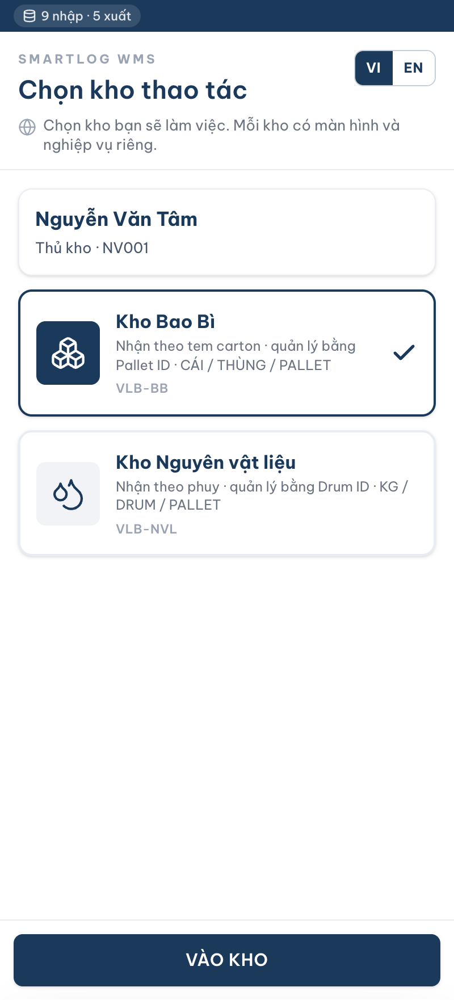
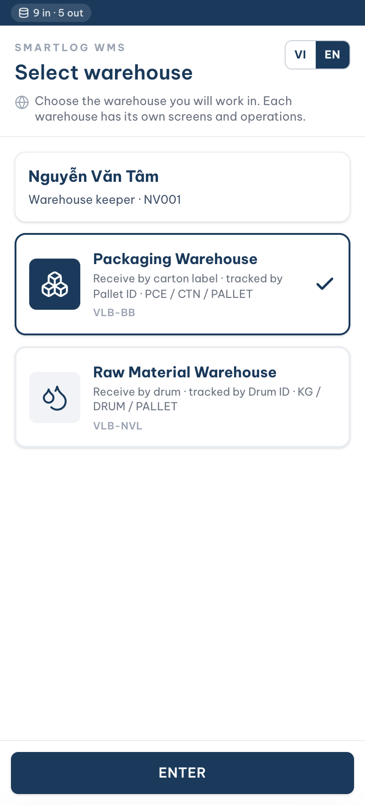
Màn hình Chọn kho thao tác — bản tiếng Việt và bản tiếng Anh — Select warehouse screen — Vietnamese and English
A. Các bước thao tác
A. Steps
Bước 1. Mở app WMS trên máy handheld. Màn hình đầu tiên hiện ra là Chọn kho thao tác.
Step 1. Open the WMS app on the handheld. The first screen is Select warehouse.
Bước 2. Bấm nút VI hoặc EN ở góc phải trên để chọn ngôn ngữ hiển thị. Ngôn ngữ vừa chọn áp dụng cho toàn bộ app, kể cả các màn hình bên trong kho.
Step 2. Tap VI or EN at the top right to choose the display language. The choice applies to the whole app, including every screen inside the warehouse.
Bước 3. Bấm vào thẻ Kho Bao Bì hoặc thẻ Kho Nguyên vật liệu. Thẻ đang chọn có viền đậm và dấu tích bên phải.
Step 3. Tap the Packaging Warehouse card or the Raw Material Warehouse card. The selected card has a bold border and a check mark on the right.
Bước 4. Bấm nút VÀO KHO. App mở màn hình Danh sách công việc của kho vừa chọn.
Step 4. Tap ENTER. The app opens the Work list of the selected warehouse.
Bước 5. Muốn đổi sang kho khác: bấm dòng tên kho ngay dưới tiêu đề Danh sách công việc, hoặc vào mục Cá nhân rồi bấm Đổi kho. Màn hình Chọn kho hiện lại; chọn kho khác rồi bấm VÀO KHO. Ngôn ngữ cũng đổi được ngay tại màn hình này.
Step 5. To switch warehouse: tap the warehouse name under the Work list title, or go to Profile and tap Switch warehouse. The Select warehouse screen appears again; pick the other warehouse and tap ENTER. The language can also be changed on this screen.
B. Khác biệt giữa hai kho
B. Differences between the two warehouses
Bảng dưới đây tóm tắt những điểm khác nhau trên màn hình của hai kho. Phần A và phần B của tài liệu mô tả chi tiết từng kho.
The table below summarises how the two warehouses differ on screen. Sections A and B of this guide describe each warehouse in detail.
Hạng mục Item | Kho Bao Bì Packaging Warehouse | Kho Nguyên vật liệu Raw Material Warehouse |
|---|---|---|
Mã quản lý tồn Stock tracking code | Pallet ID Pallet ID | Drum ID (mã phuy) Drum ID |
Đơn vị tính Units of measure | CÁI · THÙNG · PALLET | KG · DRUM · PALLET |
Nhận hàng Receiving | Hai thẻ: THẺ NHÃN (quét barcode carton) và THẺ KHÁC NHÃN (dán tem Pallet ID mới) Two tabs: LABELLED (scan the carton barcode) and UNLABELLED (attach a new Pallet ID label) | Một luồng duy nhất: quét DRUMID trên từng phuy A single flow: scan the DRUMID on each drum |
Cất hàng Putaway | Quét PALLETID rồi quét mã vị trí Scan the PALLETID, then the location code | Quét MÃ HÀNG trước, rồi quét DRUMID, rồi quét mã vị trí Scan the ITEM CODE first, then the DRUMID, then the location code |
Soạn hàng Picking | Quét Pallet ID tại vị trí Scan the Pallet ID at the location | Quét Drum ID tại vị trí Scan the Drum ID at the location |
Mã vạch trên kiện Package barcode | Chuỗi ghép: MãHàng | SốLượng | ĐVT | MãKiểmTra Composite string: ItemCode | Qty | UoM | CheckCode | Mã phuy đơn, không ghép chuỗi A single drum code, no composite string |
Khu vực lưu trữ Storage zones | 1001 – 1003 (A · B · C) | 2001 – 2002 (D · E) |
C. Nạp dữ liệu đơn hàng
C. Loading order data
Đơn nhập và đơn xuất không nhập trên máy handheld. Chúng được soạn trước trên một bảng tính Google Sheet dùng chung, app đọc về để nhân viên kho thao tác — đúng như hệ thống thật, nơi đơn được tạo trên web trước rồi mới tới bước thao tác trên máy.
Inbound and outbound orders are not entered on the handheld. They are prepared beforehand in a shared Google Sheet and read by the app for the operator to work on — mirroring the real system, where orders are created on the web before any handheld work begins.
C.1. Bảng tính đơn hàng ở đâu
C.1. Where the order spreadsheet is
Bước 1. Mở bảng tính dùng chung theo đường dẫn dưới đây. Trong app cũng mở được: bấm Khác rồi bấm ô Bảng tính nhập đơn.
Step 1. Open the shared spreadsheet at the link below. It can also be opened from the app: tap Other, then Order spreadsheet.
https://docs.google.com/spreadsheets/d/1YkHb9g1XmhQ_efIPoxShbfftprJ-uS8p-yX7NBzYLxA/edit
Bảng tính có sẵn hai tab: DON_NHAP (đơn nhập) và DON_XUAT (đơn xuất). / The spreadsheet has two tabs: DON_NHAP (inbound) and DON_XUAT (outbound).
Bước 2. Mở tab DON_NHAP để tạo đơn nhập, tab DON_XUAT để tạo đơn xuất. Mỗi dòng là một dòng hàng; nhiều dòng cùng một mã đơn thì app gộp thành một đơn nhiều mặt hàng.
Step 2. Use the DON_NHAP tab for inbound orders and DON_XUAT for outbound orders. Each row is one order line; rows sharing an order code are grouped into a single multi-item order.
Bước 3. Điền theo đúng tên cột ở dòng đầu tiên, không đổi tên và không xoá cột. Cột KHO điền BB cho Kho Bao Bì, NVL cho Kho Nguyên vật liệu.
Step 3. Fill in under the exact column names in the first row — do not rename or delete columns. In the KHO column enter BB for the Packaging warehouse and NVL for the Raw material warehouse.
Bước 4. Ngày viết dạng dd/MM/yyyy. Mã hàng phải có trong danh mục hàng hoá, vị trí phải có trong kho tương ứng — sai thì dòng đó bị bỏ qua và app báo ở bảng trạng thái dữ liệu.
Step 4. Dates use dd/MM/yyyy. Item codes must exist in the item master and locations must exist in that warehouse — otherwise the row is skipped and the app reports it in the data status panel.
Bước 5. Điền xong thì quay lại app, chạm chip dữ liệu trên thanh trên cùng rồi bấm Tải lại. Đơn vừa tạo hiện ngay trong Danh sách công việc.
Step 5. When done, go back to the app, tap the data chip in the top bar and tap Reload. The new orders appear in the Work list straight away.
C.2. Trạng thái dữ liệu trong app
C.2. Data status in the app
Trạng thái dữ liệu hiển thị thành một chip nhỏ trên thanh trên cùng của máy, ngay cạnh đồng hồ — nhìn thấy ở mọi màn hình chứ không riêng màn Chọn kho. Chạm vào chip để mở bảng chi tiết kèm nút Tải lại.
The data status appears as a small chip in the top bar next to the clock — visible on every screen, not only on Select warehouse. Tap the chip to open the details panel with the Reload button.
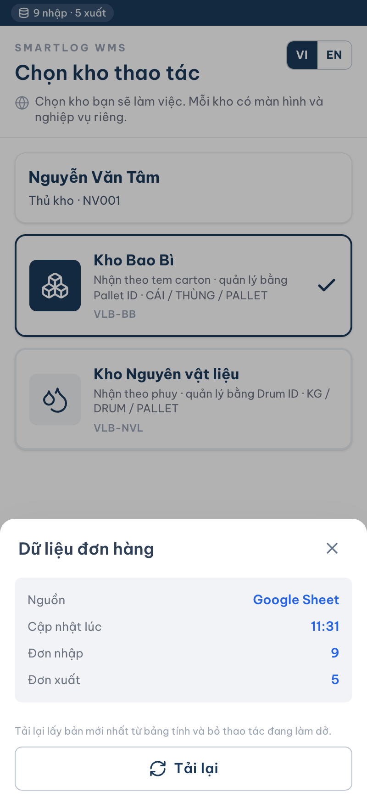
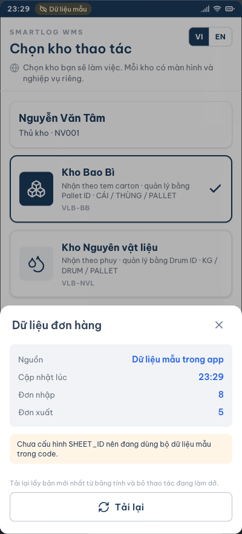
Chip dữ liệu trên thanh trên cùng và bảng chi tiết khi chạm vào — The data chip in the top bar and the details panel it opens
Chip hiển thị Chip shows | Ý nghĩa Meaning |
|---|---|
Đang tải… Loading… | App đang đọc bảng tính. Nút VÀO KHO tạm khoá. The app is reading the spreadsheet. ENTER is temporarily disabled. |
8 nhập · 5 xuất 8 in · 5 out | Dữ liệu đã về đủ: số đơn nhập và số đơn xuất đang có. Data has arrived: the number of inbound and outbound orders available. |
Dữ liệu mẫu (nền vàng) Sample data (amber) | Không đọc được bảng tính, app chạy bằng bộ dữ liệu mẫu sẵn có để buổi demo không bị gián đoạn. Mở bảng chi tiết để xem lý do. The spreadsheet could not be read; the app runs on built-in sample data so the demo is not interrupted. Open the details panel for the reason. |
Dấu tam giác cảnh báo Warning triangle | Có dòng trong bảng tính sai dữ liệu và đã bị bỏ qua. Mở bảng chi tiết để biết tab nào, dòng nào, cột nào. Các dòng còn lại vẫn dùng được bình thường. Some rows in the sheet are invalid and were skipped. Open the details panel for the tab, row and column. The remaining rows still load normally. |
Sau khi sửa bảng tính, chạm chip rồi bấm Tải lại để lấy bản mới nhất.
After editing the spreadsheet, tap the chip and then Reload to fetch the latest version.
Cũng có thể tải lại từ mục Cá nhân, nút Tải lại dữ liệu đơn hàng.
You can also reload from Profile using the Reload order data button.
D. Quét mã bằng camera
D. Scanning with the camera
Mọi ô có biểu tượng quét đều dùng được camera của máy: ô quét mã carton, mã phuy, mã pallet, mã hàng và mã vị trí. Cách này dành cho máy không gắn đầu quét chuyên dụng, ví dụ khi xem thử trên điện thoại.
Every field with a scan icon can use the device camera: carton code, drum code, pallet code, item code and location code. This is for devices without a dedicated scanner head — for example when trying the app on a phone.
Bước 1. Chạm biểu tượng quét ở bên phải ô cần nhập.
Step 1. Tap the scan icon on the right of the field.
Bước 2. Bấm nút Quét bằng camera ở đầu bảng hiện ra. Lần đầu máy sẽ hỏi quyền dùng camera, chọn Cho phép.
Step 2. Tap Scan with camera at the top of the panel. The first time, the device asks for camera permission — choose Allow.
Bước 3. Đưa mã vạch nằm gọn trong khung sáng giữa màn hình, cách máy khoảng một gang tay. Đọc được là app tự điền và đóng camera.
Step 3. Line the barcode up inside the bright frame in the middle of the screen, about a hand span away. Once read, the app fills the field and closes the camera.
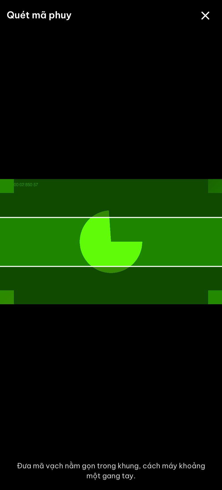
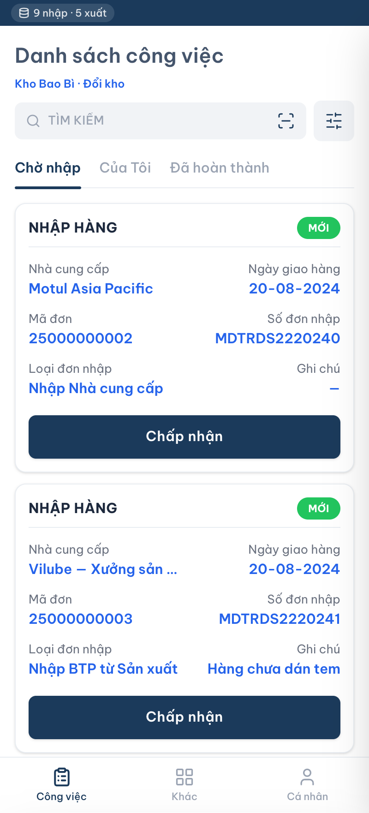
Nút Quét bằng camera và màn hình quét — The Scan with camera button and the scanning screen
Nếu bấm nhầm Không cho phép, app hiện thông báo và nút quay về danh sách mã. Muốn dùng lại camera thì bật quyền cho trang này trong cài đặt trình duyệt.
If permission is denied, the app shows a message and a button back to the code list. To use the camera again, enable the permission for this site in the browser settings.
PHẦN A. KHO BAO BÌ
SECTION A. PACKAGING WAREHOUSE
Áp dụng khi ở màn hình Chọn kho thao tác bạn chọn Kho Bao Bì. Hàng ở kho này quản lý theo Pallet ID, đơn vị tính là CÁI, THÙNG và PALLET.
Applies when you select Packaging Warehouse on the Select warehouse screen. Stock here is tracked by Pallet ID; the units of measure are PCE, CARTON and PALLET.
PHẦN 1. NHẬN HÀNG
PART 1. RECEIVING
A. Màn hình Danh sách công việc
A. Work list screen

Bước 1. Bấm mục Công việc trên thanh điều hướng dưới màn hình.
Step 1. Tap Work on the bottom navigation bar.
Bước 2. Bấm biểu tượng bộ lọc bên phải ô Tìm kiếm, chọn Nhận hàng, bấm Đóng.
Step 2. Tap the filter icon to the right of the Search box, choose Receiving, then tap Close.
Bước 3. Bấm tab Chờ nhập.
Step 3. Tap the Pending tab.
Bước 4. Gõ mã đơn, số đơn nhập hoặc tên nhà cung cấp vào ô Tìm kiếm; hoặc bấm biểu tượng quét trong ô Tìm kiếm.
Step 4. Type the order code, inbound number or supplier name into the Search box; or tap the scan icon inside the box.
Bước 5. Kiểm tra thẻ đơn: nhà cung cấp, ngày giao hàng, mã đơn, số đơn nhập, loại đơn nhập.
Step 5. Check the order card: supplier, delivery date, order code, inbound number, inbound type.
Bước 6. Bấm nút Chấp nhận trên thẻ đơn.
Step 6. Tap Accept on the order card.
B. Màn hình Chi tiết nhập hàng
B. Inbound detail screen
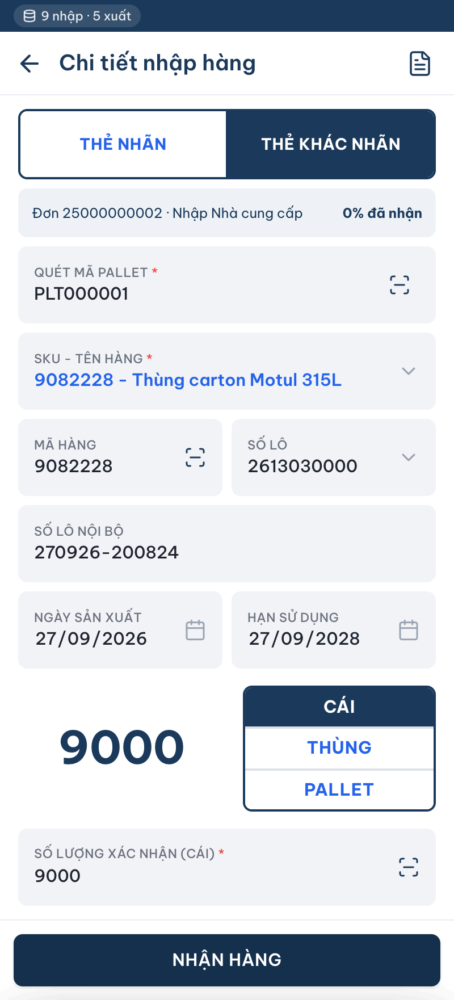
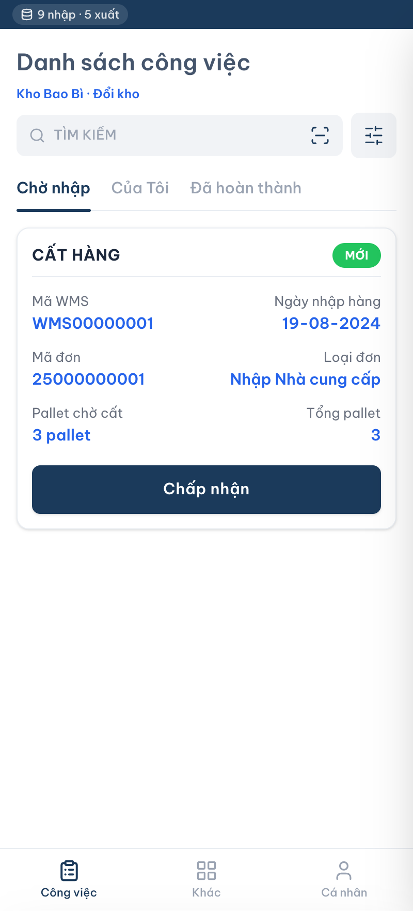
Thẻ nhãn và Thẻ khác nhãn — Labelled tab and Unlabelled tab
Bước 7. Bấm thẻ THẺ NHÃN nếu hàng đã có tem nhãn; bấm thẻ THẺ KHÁC NHÃN nếu hàng chưa có tem nhãn.
Step 7. Tap LABELLED if the goods already carry a label; tap UNLABELLED if they do not.
B.1. Thẻ THẺ NHÃN
B.1. LABELLED tab
Bước 8. Bấm ô QUÉT MÃ CARTON, quét mã trên thùng carton.
Step 8. Tap SCAN CARTON CODE and scan the code on the carton.
Bước 9. Kiểm tra mã hàng, SKU – tên hàng, số lô, ngày sản xuất, hạn sử dụng, số lô nội bộ hệ thống tự điền.
Step 9. Check the item code, SKU – item name, lot number, MFG date, EXP date and internal lot number filled in by the system.
Bước 10. Bấm chọn đơn vị tính: CÁI, THÙNG hoặc PALLET.
Step 10. Choose the unit of measure: PCE, CARTON or PALLET.
Bước 11. Bấm ô SỐ LƯỢNG XÁC NHẬN, nhập số lượng thực nhận.
Step 11. Tap CONFIRMED QTY and enter the quantity actually received.
Bước 12. Bấm nút NHẬN HÀNG.
Step 12. Tap RECEIVE.
Bước 13. Lặp lại từ Bước 8 cho carton tiếp theo.
Step 13. Repeat from Step 8 for the next carton.
B.2. Thẻ THẺ KHÁC NHÃN (thay cho Bước 8 đến 13)
B.2. UNLABELLED tab (replaces Steps 8 to 13)
Bước 8. Dán tem Pallet ID lên pallet, bấm ô QUÉT MÃ PALLET, quét tem.
Step 8. Attach a Pallet ID label to the pallet, tap SCAN PALLET CODE and scan the label.
Bước 9. Bấm ô SKU – Tên hàng, chọn mã hàng.
Step 9. Tap SKU – Item name and choose the item.
Bước 10. Kiểm tra và điền số lô, ngày sản xuất, hạn sử dụng, số lô nội bộ nếu còn trống.
Step 10. Check and fill in the lot number, MFG date, EXP date and internal lot number if they are empty.
Bước 11. Bấm chọn đơn vị tính: CÁI, THÙNG hoặc PALLET.
Step 11. Choose the unit of measure: PCE, CARTON or PALLET.
Bước 12. Bấm ô SỐ LƯỢNG XÁC NHẬN, nhập số lượng thực nhận.
Step 12. Tap CONFIRMED QTY and enter the quantity actually received.
Bước 13. Bấm nút NHẬN HÀNG.
Step 13. Tap RECEIVE.
Bước 14. Lặp lại từ Bước 8 cho pallet tiếp theo.
Step 14. Repeat from Step 8 for the next pallet.
PHẦN 2. CẤT HÀNG
PART 2. PUTAWAY
A. Màn hình Danh sách công việc
A. Work list screen
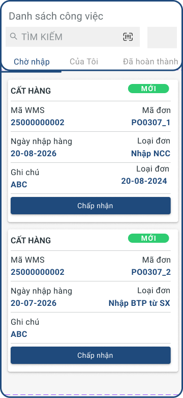
Bước 1. Bấm mục Công việc trên thanh điều hướng dưới màn hình.
Step 1. Tap Work on the bottom navigation bar.
Bước 2. Bấm biểu tượng bộ lọc bên phải ô Tìm kiếm, chọn Cất hàng.
Step 2. Tap the filter icon to the right of the Search box and choose Putaway.
Bước 3. Bấm tab Chờ nhập.
Step 3. Tap the Pending tab.
Bước 4. Gõ mã WMS hoặc mã đơn vào ô Tìm kiếm; hoặc bấm biểu tượng quét.
Step 4. Type the WMS code or order code into the Search box; or tap the scan icon.
Bước 5. Kiểm tra thẻ công việc: mã WMS, mã đơn, ngày nhập hàng, loại đơn.
Step 5. Check the job card: WMS code, order code, receipt date, order type.
Bước 6. Bấm nút Chấp nhận.
Step 6. Tap Accept.
B. Màn hình Cất hàng
B. Putaway screen
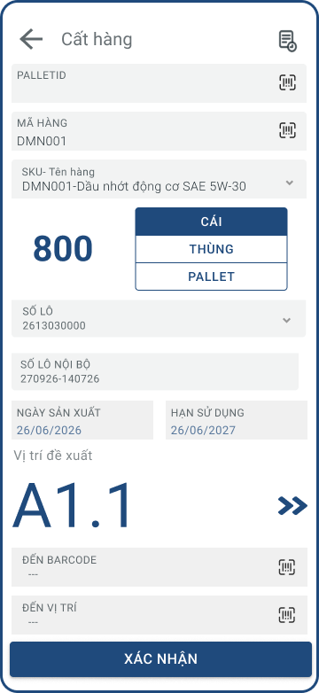
Bước 7. Bấm ô PALLETID, quét mã pallet.
Step 7. Tap PALLETID and scan the pallet code.
Bước 8. Kiểm tra mã hàng, SKU – tên hàng, số lượng, đơn vị tính, số lô, số lô nội bộ, ngày sản xuất, hạn sử dụng.
Step 8. Check the item code, SKU – item name, quantity, unit, lot number, internal lot number, MFG date and EXP date.
Bước 9. Xem vị trí đề xuất. Nếu không dùng vị trí này, bấm nút mũi tên kép bên phải để lấy vị trí khác.
Step 9. Look at the suggested location. To use a different one, tap the double-arrow button on the right.
Bước 10. Đưa pallet tới vị trí.
Step 10. Move the pallet to the location.
Bước 11. Nếu cất qua một mã barcode mới thì quét mã đó, không thì bỏ qua.
Step 11. If the goods are put away under a new barcode, scan it; otherwise skip this step.
Bước 12. Bấm ô ĐẾN VỊ TRÍ, quét mã vị trí.
Step 12. Tap TO LOCATION and scan the location code.
Bước 13. Bấm nút XÁC NHẬN.
Step 13. Tap CONFIRM.
Bước 14. Lặp lại từ Bước 7 cho pallet tiếp theo trong công việc.
Step 14. Repeat from Step 7 for the next pallet in the job.
PHẦN 3. NHẬP HÀNG CHỦ ĐỘNG (OTHER WORK)
PART 3. DIRECT RECEIPT (OTHER WORK)
A. Màn hình Khác
A. Other screen
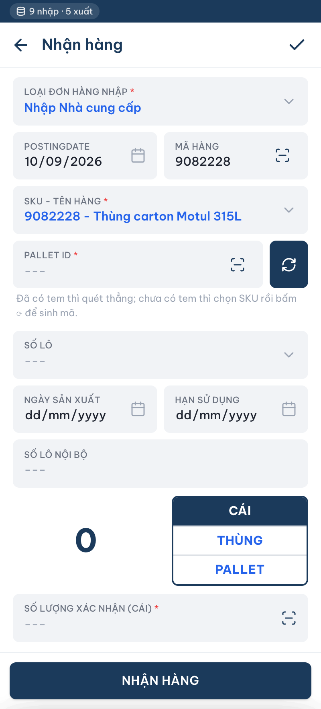
Bước 1. Bấm mục Khác trên thanh điều hướng dưới màn hình.
Step 1. Tap Other on the bottom navigation bar.
Bước 2. Bấm ô Nhập hàng.
Step 2. Tap Inbound.
B. Màn hình Nhận hàng
B. Receiving screen
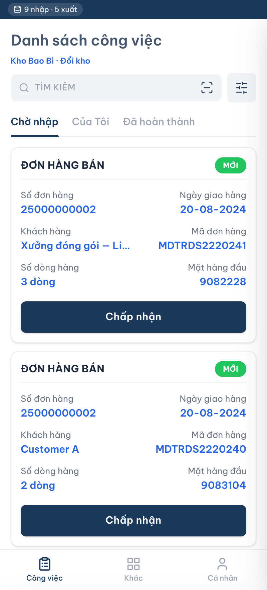
Bước 3. Bấm ô Loại đơn hàng nhập, chọn loại đơn, ví dụ Tái nhập từ sản xuất.
Step 3. Tap Inbound order type and choose a type, for example Return from production.
Bước 4. Kiểm tra Postingdate.
Step 4. Check the Posting date.
Bước 5. Bấm ô MÃ HÀNG, quét mã hàng. Nếu hàng không có mã thì bỏ qua bước này.
Step 5. Tap ITEM CODE and scan the item code. Skip this step if the goods have no code.
Bước 6. Bấm ô SKU – Tên hàng, chọn hàng.
Step 6. Tap SKU – Item name and choose the item.
Bước 7. Bấm ô PALLET ID, quét mã pallet. Pallet chưa có tem thì bấm nút sinh mã bên phải ô này để hệ thống cấp mã mới dạng PLT + sáu chữ số.
Step 7. Tap PALLET ID and scan the pallet code. If the pallet has no label yet, tap the generate button on the right so the system issues a new code in the form PLT + six digits.
Nếu mã pallet vừa quét đã có trong hệ thống, app báo "đã có trong hệ thống — kiểm tra lại trước khi nhận".
If the scanned pallet code already exists in the system, the app warns "already exists in the system — double-check before receiving".
Bước 8. Kiểm tra số lô. Nếu trống thì bấm chọn hoặc nhập số lô.
Step 8. Check the lot number. If it is empty, pick or type one.
Bước 9. Kiểm tra ngày sản xuất, hạn sử dụng, số lô nội bộ.
Step 9. Check the MFG date, EXP date and internal lot number.
Bước 10. Bấm chọn đơn vị tính: CÁI, THÙNG hoặc PALLET.
Step 10. Choose the unit of measure: PCE, CARTON or PALLET.
Bước 11. Bấm ô SỐ LƯỢNG XÁC NHẬN, sửa theo số lượng thực nhận.
Step 11. Tap CONFIRMED QTY and adjust it to the quantity actually received.
Bước 12. Bấm nút NHẬN HÀNG. Muốn nhập tiếp mặt hàng khác thì lặp lại từ Bước 5.
Step 12. Tap RECEIVE. To receive another item, repeat from Step 5.
Bước 13. Bấm nút tích ở góc phải trên cùng để hoàn tất đơn.
Step 13. Tap the check button at the top right to complete the receipt.
Bước 14. Hệ thống hiển thị pop-up "Bạn có muốn in barcode không?".
Step 14. The system shows the pop-up "Do you want to print the barcode?".
Bước 15. Bấm CÓ để in tem, bấm KHÔNG để bỏ qua. Sau đó app quay về Danh sách công việc.
Step 15. Tap YES to print the label or NO to skip. The app then returns to the Work list.
PHẦN 4. SOẠN HÀNG THEO PHIẾU SOẠN TỔNG
PART 4. PICKING BY CONSOLIDATED PICK LIST
A. Màn hình Danh sách công việc
A. Work list screen
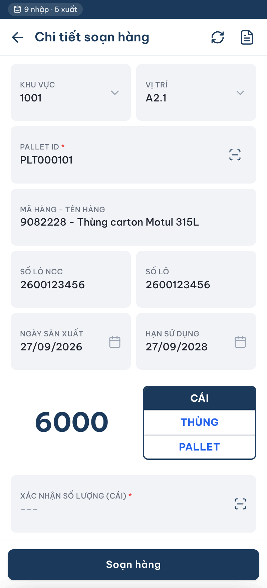
Bước 1. Bấm mục Công việc trên thanh điều hướng dưới màn hình.
Step 1. Tap Work on the bottom navigation bar.
Bước 2. Bấm biểu tượng bộ lọc bên phải ô Tìm kiếm, chọn Soạn hàng.
Step 2. Tap the filter icon to the right of the Search box and choose Picking.
Bước 3. Bấm tab Chờ nhập.
Step 3. Tap the Pending tab.
Bước 4. Gõ số đơn hàng, mã đơn hàng hoặc tên khách hàng vào ô Tìm kiếm.
Step 4. Type the SO number, order code or customer name into the Search box.
Bước 5. Kiểm tra thẻ công việc: số đơn hàng, mã đơn hàng, khách hàng, ngày giao hàng.
Step 5. Check the job card: SO number, order code, customer, delivery date.
Bước 6. Bấm nút Chấp nhận.
Step 6. Tap Accept.
B. Màn hình Chi tiết soạn hàng
B. Picking detail screen
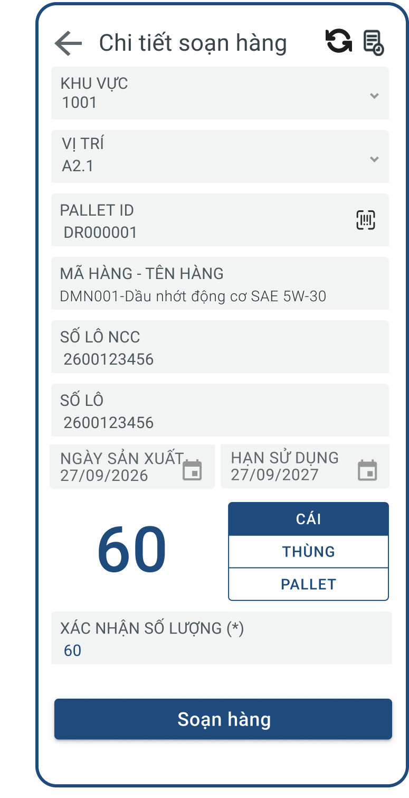
Bước 7. Xem Khu vực và Vị trí trên màn hình, đi tới vị trí đó.
Step 7. Read the Zone and Location on screen and walk to that location.
Bước 8. Bấm ô PALLET ID, quét mã pallet tại vị trí.
Step 8. Tap PALLET ID and scan the pallet code at the location.
Bước 9. Kiểm tra mã hàng – tên hàng, số lô NCC, số lô, ngày sản xuất, hạn sử dụng.
Step 9. Check the item code – item name, supplier lot, lot number, MFG date and EXP date.
Bước 10. Kiểm tra số lượng và đơn vị tính.
Step 10. Check the quantity and unit of measure.
Bước 11. Bấm ô XÁC NHẬN SỐ LƯỢNG, nhập số lượng đã soạn.
Step 11. Tap CONFIRM QUANTITY and enter the quantity picked.
Bước 12. Bấm nút Soạn hàng.
Step 12. Tap Pick.
Bước 13. Lặp lại từ Bước 7 cho dòng tiếp theo trên phiếu soạn tổng.
Step 13. Repeat from Step 7 for the next line on the consolidated pick list.
PHẦN B. KHO NGUYÊN VẬT LIỆU
SECTION B. RAW MATERIAL WAREHOUSE
Áp dụng khi ở màn hình Chọn kho thao tác bạn chọn Kho Nguyên vật liệu. Hàng ở kho này là dầu gốc và phụ gia đóng phuy, quản lý theo Drum ID, đơn vị tính là KG, DRUM và PALLET.
Applies when you select Raw Material Warehouse on the Select warehouse screen. Stock here is base oil and additives in drums, tracked by Drum ID; the units of measure are KG, DRUM and PALLET.
PHẦN 1. NHẬN NGUYÊN VẬT LIỆU
PART 1. RECEIVING RAW MATERIALS
A. Màn hình Danh sách công việc
A. Work list screen
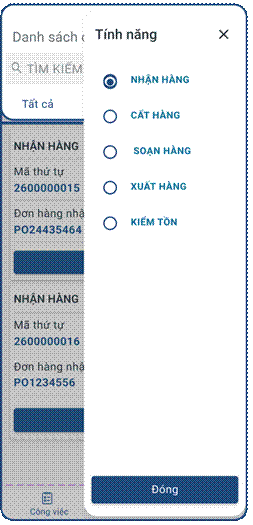
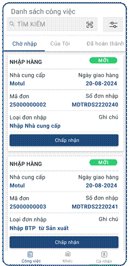
Danh sách công việc và bộ lọc tính năng — Work list and feature filter
Bước 1. Bấm mục Công việc trên thanh điều hướng dưới màn hình.
Step 1. Tap Work on the bottom navigation bar.
Bước 2. Bấm biểu tượng bộ lọc bên phải ô Tìm kiếm, chọn NHẬN HÀNG, bấm Đóng.
Step 2. Tap the filter icon to the right of the Search box, choose RECEIVING, then tap Close.
Bước 3. Bấm tab Chờ nhập.
Step 3. Tap the Pending tab.
Bước 4. Gõ mã đơn, số đơn nhập hoặc tên nhà cung cấp vào ô Tìm kiếm; hoặc bấm biểu tượng quét trong ô Tìm kiếm.
Step 4. Type the order code, inbound number or supplier name into the Search box; or tap the scan icon inside the box.
Bước 5. Kiểm tra thẻ đơn: nhà cung cấp, ngày giao hàng, mã đơn, số đơn nhập, loại đơn nhập.
Step 5. Check the order card: supplier, delivery date, order code, inbound number, inbound type.
Bước 6. Bấm nút Chấp nhận trên thẻ đơn.
Step 6. Tap Accept on the order card.
B. Màn hình Chi tiết nhập hàng
B. Inbound detail screen
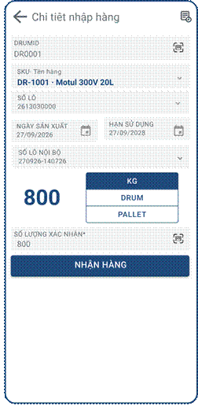
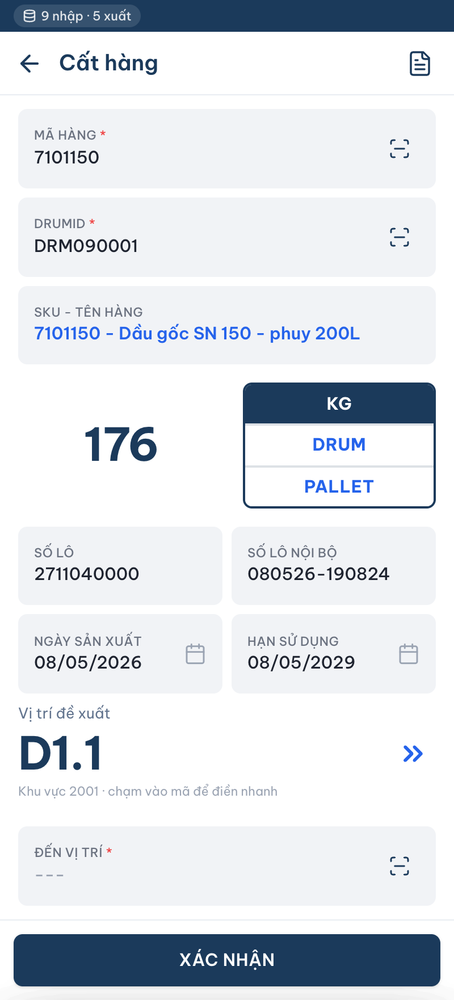
Màn hình nhận hàng theo phuy — Receiving by drum
Bước 7. Bấm ô DRUMID, quét mã phuy.
Step 7. Tap DRUMID and scan the drum code.
Bước 8. Kiểm tra SKU – tên hàng, mã hàng, số lô, ngày sản xuất, hạn sử dụng, số lô nội bộ hệ thống tự điền.
Step 8. Check the SKU – item name, item code, lot number, MFG date, EXP date and internal lot number filled in by the system.
Bước 9. Bấm chọn đơn vị tính: KG, DRUM hoặc PALLET.
Step 9. Choose the unit of measure: KG, DRUM or PALLET.
Bước 10. Bấm ô SỐ LƯỢNG XÁC NHẬN, nhập số lượng thực nhận. Với phuy cân lại, nhập đúng số cân thực tế thay vì số mặc định.
Step 10. Tap CONFIRMED QTY and enter the quantity actually received. For re-weighed drums, enter the real weight instead of the default value.
Bước 11. Bấm nút NHẬN HÀNG.
Step 11. Tap RECEIVE.
Bước 12. Lặp lại từ Bước 7 cho phuy tiếp theo.
Step 12. Repeat from Step 7 for the next drum.
PHẦN 2. CẤT HÀNG
PART 2. PUTAWAY
A. Màn hình Danh sách công việc
A. Work list screen
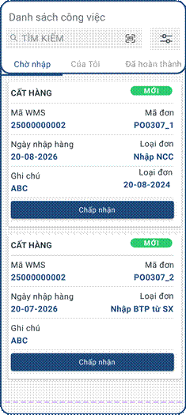
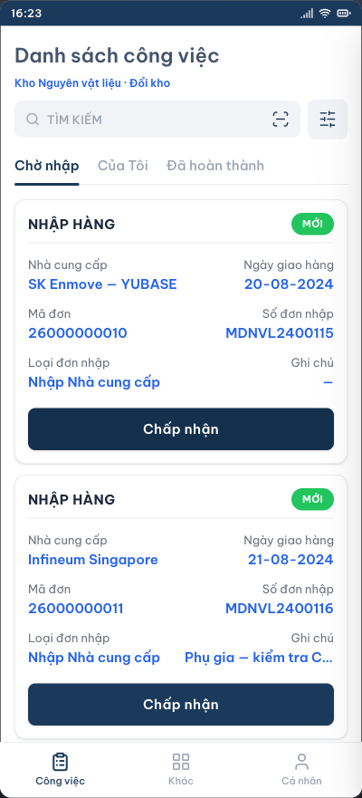
Thẻ công việc cất hàng của kho NVL — Putaway job card in the raw material warehouse
Bước 1. Bấm mục Công việc trên thanh điều hướng dưới màn hình.
Step 1. Tap Work on the bottom navigation bar.
Bước 2. Bấm biểu tượng bộ lọc bên phải ô Tìm kiếm, chọn CẤT HÀNG.
Step 2. Tap the filter icon to the right of the Search box and choose PUTAWAY.
Bước 3. Bấm tab Chờ nhập.
Step 3. Tap the Pending tab.
Bước 4. Gõ mã WMS hoặc mã đơn vào ô Tìm kiếm; hoặc bấm biểu tượng quét.
Step 4. Type the WMS code or order code into the Search box; or tap the scan icon.
Bước 5. Kiểm tra thẻ công việc: mã WMS, mã đơn, ngày nhập hàng, loại đơn, số phuy chờ cất.
Step 5. Check the job card: WMS code, order code, receipt date, order type and the number of drums to put away.
Bước 6. Bấm nút Chấp nhận.
Step 6. Tap Accept.
B. Màn hình Cất hàng
B. Putaway screen
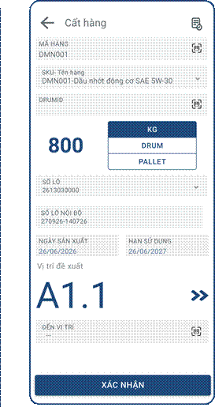
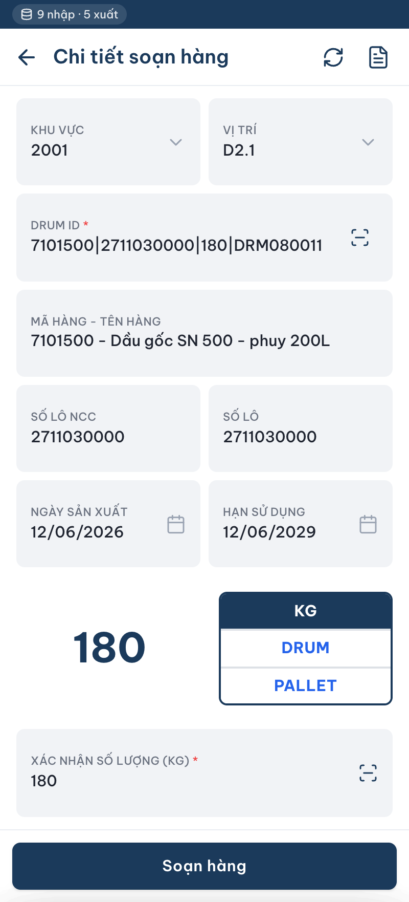
Cất hàng: quét mã hàng trước, rồi quét mã phuy — Putaway: scan the item code first, then the drum code
Bước 7. Bấm ô MÃ HÀNG, quét mã hàng.
Step 7. Tap ITEM CODE and scan the item code.
Bước 8. Kiểm tra SKU – tên hàng hệ thống tự điền.
Step 8. Check the SKU – item name filled in by the system.
Bước 9. Bấm ô DRUMID, quét mã phuy. Danh sách chỉ còn các phuy thuộc mã hàng vừa quét.
Step 9. Tap DRUMID and scan the drum code. Only drums of the scanned item remain in the list.
Bước 10. Kiểm tra số lượng, đơn vị tính, số lô, số lô nội bộ, ngày sản xuất, hạn sử dụng.
Step 10. Check the quantity, unit, lot number, internal lot number, MFG date and EXP date.
Bước 11. Xem vị trí đề xuất. Nếu không dùng vị trí này, bấm nút mũi tên kép bên phải để lấy vị trí khác.
Step 11. Look at the suggested location. To use a different one, tap the double-arrow button on the right.
Bước 12. Đưa hàng tới vị trí.
Step 12. Move the drum to the location.
Bước 13. Bấm ô ĐẾN VỊ TRÍ, quét mã vị trí.
Step 13. Tap TO LOCATION and scan the location code.
Bước 14. Bấm nút XÁC NHẬN.
Step 14. Tap CONFIRM.
Bước 15. Lặp lại từ Bước 7 cho phuy tiếp theo trong công việc.
Step 15. Repeat from Step 7 for the next drum in the job.
PHẦN 3. NHẬP HÀNG CHỦ ĐỘNG (OTHER WORK)
PART 3. DIRECT RECEIPT (OTHER WORK)
A. Màn hình Khác
A. Other screen
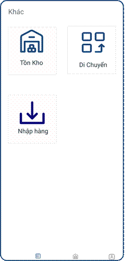
Màn hình Khác — Other screen
Bước 1. Bấm mục Khác trên thanh điều hướng dưới màn hình.
Step 1. Tap Other on the bottom navigation bar.
Bước 2. Bấm ô Nhập hàng.
Step 2. Tap Inbound.
B. Màn hình Nhận hàng
B. Receiving screen
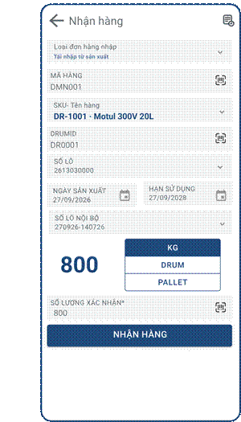
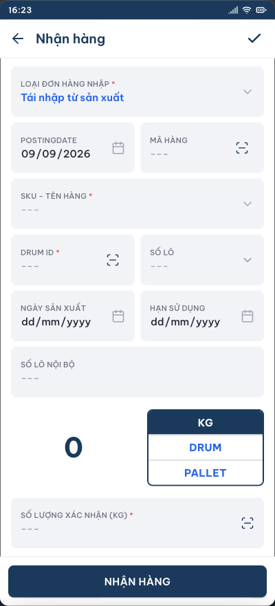
Nhập hàng chủ động kho NVL — Direct receipt in the raw material warehouse
B1. Trường hợp 1 — Phuy đã có tem DRUM ID
B1. Case 1 — The drum already has a DRUM ID label
Bước 3a. Bấm ô Loại đơn hàng nhập, chọn loại đơn, ví dụ Tái nhập từ sản xuất.
Step 3a. Tap Inbound order type and choose a type, for example Return from production.
Bước 4a. Kiểm tra Postingdate.
Step 4a. Check the Posting date.
Bước 5a. Bấm ô DRUMID, quét tem phuy. Tem gồm bốn phần ngăn bằng dấu | : mã hàng | số lô | số lượng | mã phuy.
Step 5a. Tap DRUMID and scan the drum label. The label has four parts separated by | : item code | lot number | quantity | drum code.
Bước 6a. Hệ thống cắt chuỗi trên tem và tự điền SKU – Tên hàng, Số lô, Số lượng. Hai ô SKU và Số lô khoá lại để khỏi sửa nhầm.
Step 6a. The system splits the label string and fills in SKU – Item name, Lot number and Quantity. SKU and Lot number are locked to prevent accidental edits.
Bước 7a. Kiểm tra ngày sản xuất, hạn sử dụng, số lô nội bộ; nhập bổ sung nếu còn trống.
Step 7a. Check the MFG date, EXP date and internal lot number; fill them in if they are still empty.
Bước 8a. Bấm ô SỐ LƯỢNG XÁC NHẬN, sửa lại theo tồn thực tế trong phuy. Dòng chữ dưới ô cho biết đang lệch bao nhiêu so với số in trên tem.
Step 8a. Tap CONFIRMED QTY and adjust it to the stock actually in the drum. The line below the box shows the difference from the quantity printed on the label.
Bước 9a. Bấm nút NHẬN HÀNG.
Step 9a. Tap RECEIVE.
Nếu mã phuy vừa quét đã có trong hệ thống, app báo "đã có trong hệ thống — kiểm tra lại trước khi nhận". Kiểm tra lại phuy trước khi bấm NHẬN HÀNG.
If the scanned drum code already exists in the system, the app warns "already exists in the system — double-check before receiving". Verify the drum before tapping RECEIVE.
B2. Trường hợp 2 — Phuy chưa có tem
B2. Case 2 — The drum has no label yet
Bước 3b. Bấm ô Loại đơn hàng nhập, chọn loại đơn.
Step 3b. Tap Inbound order type and choose a type.
Bước 4b. Kiểm tra Postingdate.
Step 4b. Check the Posting date.
Bước 5b. Bấm ô MÃ HÀNG quét mã hàng, hoặc bấm ô SKU – Tên hàng chọn hàng trong danh sách.
Step 5b. Tap ITEM CODE and scan the item code, or tap SKU – Item name and pick the item from the list.
Bước 6b. Bấm nút sinh mã bên phải ô DRUMID. Hệ thống cấp mã mới dạng DRM + sáu chữ số, nối tiếp mã lớn nhất đang có nên không trùng phuy cũ.
Step 6b. Tap the generate button to the right of DRUMID. The system issues a new code in the form DRM + six digits, continuing from the highest existing code so it never clashes with an older drum.
Bước 7b. Bấm ô Số lô, chọn hoặc nhập số lô.
Step 7b. Tap Lot number and pick or type the lot.
Bước 8b. Nhập ngày sản xuất và hạn sử dụng. Hệ thống tự dựng số lô nội bộ.
Step 8b. Enter the MFG and EXP dates. The system builds the internal lot number automatically.
Bước 9b. Bấm chọn đơn vị tính: KG, DRUM hoặc PALLET.
Step 9b. Choose the unit of measure: KG, DRUM or PALLET.
Bước 10b. Bấm ô SỐ LƯỢNG XÁC NHẬN, nhập số lượng cân được của phuy.
Step 10b. Tap CONFIRMED QTY and enter the weighed quantity of the drum.
Bước 11b. Bấm nút NHẬN HÀNG.
Step 11b. Tap RECEIVE.
C. Hoàn tất đơn và in tem
C. Complete the receipt and print labels
Bước 12. Muốn nhập tiếp phuy khác thì lặp lại theo trường hợp tương ứng.
Step 12. To receive another drum, repeat the steps of the matching case.
Bước 13. Bấm nút tích ở góc phải trên cùng để hoàn tất đơn.
Step 13. Tap the check button at the top right to complete the receipt.
Bước 14. Hệ thống hiển thị pop-up "Bạn có muốn in barcode không?".
Step 14. The system shows the pop-up "Do you want to print the barcode?".
Bước 15. Bấm CÓ để in tem phuy, bấm KHÔNG để bỏ qua. Phuy vừa được cấp mã ở Trường hợp 2 cần in tem và dán lên phuy.
Step 15. Tap YES to print the drum label or NO to skip. Drums issued a code in Case 2 must have their label printed and stuck on.
PHẦN 4. SOẠN HÀNG (XUẤT NGUYÊN VẬT LIỆU)
PART 4. PICKING (RAW MATERIAL ISSUE)
A. Màn hình Danh sách công việc
A. Work list screen
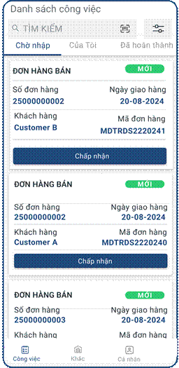
Bước 1. Bấm mục Công việc trên thanh điều hướng dưới màn hình.
Step 1. Tap Work on the bottom navigation bar.
Bước 2. Bấm biểu tượng bộ lọc bên phải ô Tìm kiếm, chọn SOẠN HÀNG.
Step 2. Tap the filter icon to the right of the Search box and choose PICKING.
Bước 3. Bấm tab Chờ nhập.
Step 3. Tap the Pending tab.
Bước 4. Gõ số đơn hàng, mã đơn hàng hoặc tên bộ phận nhận vào ô Tìm kiếm.
Step 4. Type the SO number, order code or receiving department into the Search box.
Bước 5. Kiểm tra thẻ công việc: số đơn hàng, mã đơn hàng, bộ phận nhận, ngày giao.
Step 5. Check the job card: SO number, order code, receiving department, delivery date.
Bước 6. Bấm nút Chấp nhận.
Step 6. Tap Accept.
B. Màn hình Chi tiết soạn hàng
B. Picking detail screen
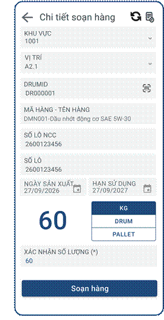
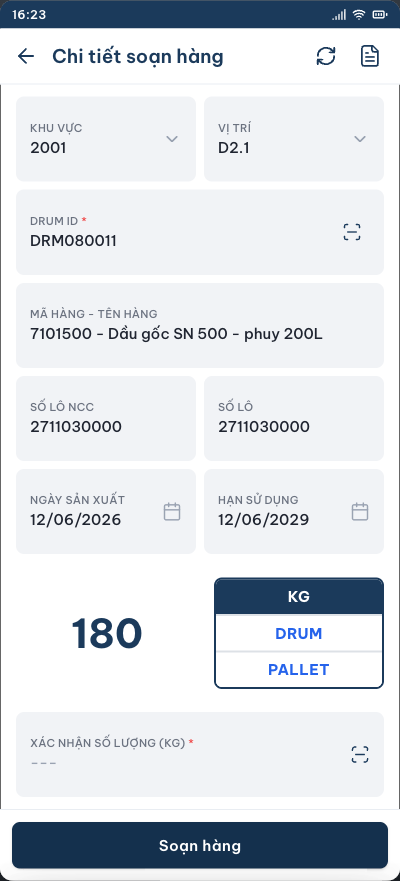
Soạn hàng theo Drum ID — Picking by Drum ID
Bước 7. Xem Khu vực và Vị trí trên màn hình, đi tới vị trí đó.
Step 7. Read the Zone and Location on screen and walk to that location.
Bước 8. Bấm ô DRUMID, quét mã phuy tại vị trí.
Step 8. Tap DRUMID and scan the drum code at the location.
Bước 9. Kiểm tra mã hàng – tên hàng, số lô NCC, số lô, ngày sản xuất, hạn sử dụng.
Step 9. Check the item code – item name, supplier lot, lot number, MFG date and EXP date.
Bước 10. Kiểm tra số lượng và đơn vị tính.
Step 10. Check the quantity and unit of measure.
Bước 11. Bấm ô XÁC NHẬN SỐ LƯỢNG, nhập số lượng đã soạn.
Step 11. Tap CONFIRM QUANTITY and enter the quantity picked.
Bước 12. Bấm nút Soạn hàng.
Step 12. Tap Pick.
Bước 13. Lặp lại từ Bước 7 cho dòng tiếp theo trên phiếu soạn.
Step 13. Repeat from Step 7 for the next line on the pick list.
PHẦN 5. BỘ TEST CASE
PART 5. TEST CASES
Phần này tách theo bốn luồng: nhập bao bì, xuất bao bì, nhập nguyên vật liệu và xuất nguyên vật liệu. Mỗi luồng gồm quy tắc mã, dữ liệu chuẩn bị, một test case luồng chuẩn ghi chi tiết từng bước, bảng kỳ vọng và các test case còn lại.
This part is split into four flows: packaging inbound, packaging outbound, raw material inbound and raw material outbound. Each flow contains the code rules, the test data, one detailed happy-path test case, an expectation table and the remaining test cases.
5.1. Quy ước chung
5.1. Common conventions
Ký hiệu Notation | Ý nghĩa Meaning |
|---|---|
TC-BB-IN-xx TC-BB-IN-xx | Test case nhập bao bì Packaging inbound test case |
TC-BB-OUT-xx TC-BB-OUT-xx | Test case xuất bao bì Packaging outbound test case |
TC-NVL-IN-xx TC-NVL-IN-xx | Test case nhập nguyên vật liệu Raw material inbound test case |
TC-NVL-OUT-xx TC-NVL-OUT-xx | Test case xuất nguyên vật liệu Raw material outbound test case |
5.2. NHẬP BAO BÌ
5.2. PACKAGING INBOUND
5.2.1. Quy tắc đọc barcode trên tem carton
5.2.1. Reading the carton label barcode
Cấu trúc barcode: 9082228|3000|PCE|0008083
Barcode structure: 9082228|3000|PCE|0008083
Đoạn Segment | Số ký tự Length | Ví dụ Example | Ý nghĩa Meaning |
|---|---|---|---|
1 | 7 | 9082228 | Mã hàng Item code |
2 | 4 | 3000 | Số lượng Quantity |
3 | 3 | PCE | Đơn vị tính Unit of measure |
4 | 7 | 0008083 | Mã kiểm tra trùng. Mỗi carton một mã; quét lại lần hai thì báo lỗi trùng. Duplicate check code. One per carton; scanning it twice raises a duplicate error. |
Sau khi quét, hệ thống tự điền mã hàng, SKU – tên hàng, số lô, ngày sản xuất, hạn sử dụng, số lô nội bộ, đơn vị tính và số lượng.
After the scan, the system fills in the item code, SKU – item name, lot number, MFG date, EXP date, internal lot number, unit of measure and quantity.
Mã đơn vị trong barcode Barcode unit code | Nhãn hiển thị trên app Label shown in the app |
|---|---|
PCE | CÁI PCE |
CTN | THÙNG CARTON |
PLT | PALLET |
5.2.2. Dữ liệu chuẩn bị
5.2.2. Test data
Hạng mục Item | Giá trị Value |
|---|---|
Kho thao tác Warehouse | Kho Bao Bì (VLB-BB) Packaging Warehouse (VLB-BB) |
Nguồn dữ liệu Data source | Tab DON_NHAP của bảng tính dùng chung — các dòng mẫu có sẵn trong file Template-DonHang-WMS-Vilube.xlsx Tab DON_NHAP of the shared spreadsheet — sample rows ship in Template-DonHang-WMS-Vilube.xlsx |
Mã đơn (WMS) Order code (WMS) | 25000000002 |
Số đơn nhập (PO) Inbound number (PO) | MDTRDS2220240 |
Nhà cung cấp Supplier | Motul Asia Pacific |
Ngày giao hàng Delivery date | 20-08-2024 |
Loại đơn nhập Inbound type | Nhập Nhà cung cấp Supplier receipt |
Trạng thái đơn ban đầu Initial order status | Mới New |
Mã hàng trên đơn Item on the order | 9082228 – Thùng carton Motul 315L 9082228 – Motul carton box 315L |
Số lượng đặt Ordered quantity | 9.000 CÁI (PCE) 9,000 PCE |
Số lượng đã nhận trước khi test Received before the test | 0 |
Số lô của lô hàng Lot number | 2613030000 |
Ngày sản xuất / Hạn sử dụng MFG date / EXP date | 27/09/2026 – 27/09/2028 |
Hàng thực tế về Goods actually delivered | 3 carton, mỗi carton 3.000 CÁI, đều dán tem barcode 3 cartons of 3,000 PCE each, all carrying a barcode label |
Barcode carton 1 Carton 1 barcode | 9082228|3000|PCE|0008083 |
Barcode carton 2 Carton 2 barcode | 9082228|3000|PCE|0008084 |
Barcode carton 3 Carton 3 barcode | 9082228|3000|PCE|0008085 |
5.2.3. TC-BB-IN-01. Nhận carton đầu tiên — luồng chuẩn
5.2.3. TC-BB-IN-01. Receive the first carton — happy path
Bước Step | Thao tác Action | Dữ liệu nhập Input | Kết quả kỳ vọng Expected result |
|---|---|---|---|
1 | Ở màn hình Chọn kho thao tác, chọn Kho Bao Bì rồi bấm VÀO KHO On Select warehouse, choose Packaging Warehouse and tap ENTER | — | Mở Danh sách công việc của kho Bao Bì; dòng tên kho dưới tiêu đề hiển thị "Kho Bao Bì · Đổi kho" The Packaging Warehouse work list opens; the line under the title reads "Packaging Warehouse · Switch warehouse" |
2 | Bấm Công việc, bấm bộ lọc, chọn Nhận hàng, bấm tab Chờ nhập Tap Work, tap the filter, choose Receiving, tap the Pending tab | — | Danh sách hiển thị các thẻ NHẬP HÀNG trạng thái MỚI The list shows INBOUND cards with status NEW |
3 | Gõ mã đơn vào ô Tìm kiếm Type the order code into Search | 25000000002 | Thẻ đơn hiển thị: Motul Asia Pacific; 20-08-2024; Mã đơn 25000000002; Số đơn nhập MDTRDS2220240; Loại đơn nhập Nhập Nhà cung cấp; Ghi chú trống The card shows Motul Asia Pacific; 20-08-2024; order code 25000000002; inbound number MDTRDS2220240; inbound type Supplier receipt; empty note |
4 | Bấm nút Chấp nhận Tap Accept | — | Mở màn hình Chi tiết nhập hàng, thẻ THẺ NHÃN được chọn sẵn, các ô còn trống; đơn chuyển sang tab Của Tôi The Inbound detail screen opens with the LABELLED tab preselected and empty fields; the order moves to the Mine tab |
5 | Bấm ô QUÉT MÃ CARTON, quét barcode carton 1 Tap SCAN CARTON CODE and scan the barcode of carton 1 | 9082228|3000|PCE|0008083 | Hệ thống tự điền các trường theo bảng 5.2.4 The system fills in the fields as listed in table 5.2.4 |
6 | Kiểm tra ô SỐ LƯỢNG XÁC NHẬN Check the CONFIRMED QTY field | Giữ nguyên 3000 Keep 3000 | Ô hiển thị 3000 và cho phép sửa; số lượng lớn giữa màn hình cũng hiển thị 3000 The field shows 3000 and stays editable; the large number in the middle of the screen also shows 3000 |
7 | Bấm nút NHẬN HÀNG Tap RECEIVE | — | Thông báo nhận hàng thành công; số lượng đã nhận của mã 9082228 là 3.000, còn lại 6.000; màn hình xoá trắng để quét carton tiếp theo; mã 0008083 được ghi nhận đã quét A success message appears; item 9082228 shows 3,000 received and 6,000 remaining; the form clears for the next carton; code 0008083 is marked as scanned |
5.2.4. Kỳ vọng chi tiết sau khi quét barcode carton 1
5.2.4. Detailed expectations after scanning carton 1
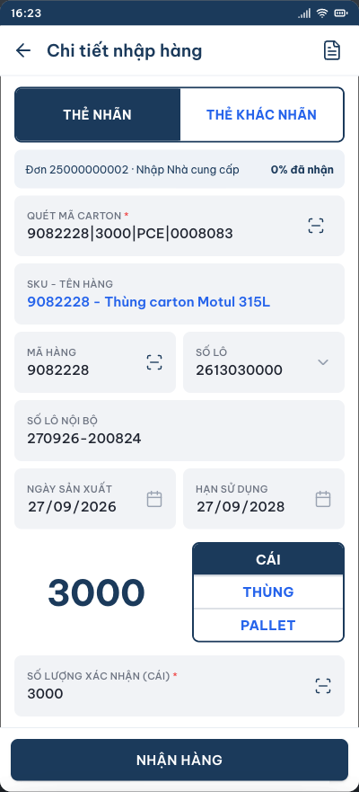
Màn hình sau khi quét 9082228|3000|PCE|0008083 — Screen after scanning 9082228|3000|PCE|0008083
Trường trên màn hình Field on screen | Giá trị kỳ vọng Expected value | Nguồn giá trị Source |
|---|---|---|
QUÉT MÃ CARTON SCAN CARTON CODE | 9082228|3000|PCE|0008083 | Mã vừa quét The scanned code |
MÃ HÀNG ITEM CODE | 9082228 | 7 ký tự đầu của barcode First 7 characters of the barcode |
SKU – Tên hàng SKU – Item name | 9082228 – Thùng carton Motul 315L | Tra master data theo mã hàng Looked up in master data by item code |
SỐ LÔ LOT NO. | 2613030000 | Dữ liệu lô của dòng hàng trên đơn nhập Lot data of the order line |
NGÀY SẢN XUẤT MFG DATE | 27/09/2026 | Theo số lô From the lot |
HẠN SỬ DỤNG EXP DATE | 27/09/2028 | Theo số lô From the lot |
SỐ LÔ NỘI BỘ INTERNAL LOT NO. | 270926-200824 270926-200824 | Hệ thống sinh tự động: ddMMyy ngày sản xuất – ddMMyy ngày nhập (xem điểm cần chốt mục 5.6) Generated automatically: ddMMyy of MFG date – ddMMyy of receipt date (see open point in 5.6) |
Đơn vị tính Unit of measure | CÁI được chọn sẵn PCE preselected | PCE trong barcode, ánh xạ sang nhãn trên app PCE in the barcode, mapped to the app label |
Số lượng hiển thị Displayed quantity | 3000 | 4 ký tự tiếp theo của barcode Next 4 characters of the barcode |
SỐ LƯỢNG XÁC NHẬN CONFIRMED QTY | 3000, cho phép sửa 3000, editable | Mặc định bằng số lượng đọc từ barcode Defaults to the quantity read from the barcode |
Mã kiểm tra trùng Duplicate check code | 0008083 | 7 ký tự cuối, lưu nội bộ, không hiển thị trên màn hình Last 7 characters, stored internally, not shown on screen |
5.2.5. Các test case còn lại của luồng nhập bao bì
5.2.5. Remaining packaging inbound test cases
Mã ID | Tình huống Scenario | Thao tác và dữ liệu Action and data | Kết quả kỳ vọng Expected result |
|---|---|---|---|
TC-BB-IN-02 | Quét trùng carton đã nhận Rescan a carton already received | Quét lại 9082228|3000|PCE|0008083 Scan 9082228|3000|PCE|0008083 again | Báo lỗi trùng mã carton 0008083; không tự điền trường nào; số lượng đã nhận vẫn 3.000, còn lại 6.000 Duplicate error for carton code 0008083; no field is filled; received stays 3,000 and remaining 6,000 |
TC-BB-IN-03 | Nhận đủ số lượng đơn Receive the full order quantity | Quét lần lượt carton 2 rồi carton 3, mỗi lần bấm NHẬN HÀNG Scan carton 2 then carton 3, tapping RECEIVE each time | Sau carton 2: đã nhận 6.000, còn 3.000. Sau carton 3: đã nhận 9.000, còn 0; đơn chuyển trạng thái Đã nhận, rời tab Của Tôi sang Đã hoàn thành; hệ thống sinh công việc Cất hàng After carton 2: 6,000 received, 3,000 left. After carton 3: 9,000 received, 0 left; the order becomes Received, leaves Mine for Completed; a Putaway job is created |
TC-BB-IN-04 | Mã hàng không thuộc đơn Item not on the order | Quét 9999999|3000|PCE|0008090 Scan 9999999|3000|PCE|0008090 | Báo lỗi mã hàng 9999999 không thuộc đơn nhập; không tự điền trường nào Error: item 9999999 does not belong to this inbound order; no field is filled |
TC-BB-IN-05 | Số lượng vượt số còn lại Quantity exceeds the remainder | Khi còn lại 6.000, quét 9082228|9999|PCE|0008091 With 6,000 remaining, scan 9082228|9999|PCE|0008091 | Báo lỗi số lượng 9.999 vượt số còn lại 6.000 của đơn; không tự điền trường nào và không cho bấm NHẬN HÀNG Error: quantity 9,999 exceeds the remaining 6,000; no field is filled and RECEIVE is refused |
TC-BB-IN-06 | Thực nhận thiếu so với barcode Actual quantity lower than the barcode | Quét carton 3.000, sửa SỐ LƯỢNG XÁC NHẬN thành 2800, bấm NHẬN HÀNG Scan a 3,000 carton, change CONFIRMED QTY to 2800 and tap RECEIVE | Ghi nhận 2.800; số lượng đã nhận tăng 2.800; phần chênh 200 xử lý theo quy tắc thiếu hụt của dự án (xem mục 5.6) Records 2,800; the received quantity increases by 2,800; the 200 difference follows the project shortage rule (see 5.6) |
TC-BB-IN-07 | Barcode sai định dạng Malformed barcode | Quét 9082228|3000|PCE (thiếu đoạn cuối) Scan 9082228|3000|PCE (last segment missing) | Báo lỗi định dạng barcode, nêu rõ dạng đúng MãHàng|SốLượng|ĐVT|MãKiểmTra; không tự điền trường nào Barcode format error stating the correct form ItemCode|Qty|UoM|CheckCode; no field is filled |
TC-BB-IN-08 | Quét trùng ở đơn nhập khác Duplicate scan on another order | Quét 9082228|3000|PCE|0008083 ở một đơn nhập khác Scan 9082228|3000|PCE|0008083 on a different inbound order | Kết quả tuỳ quy tắc phạm vi chặn trùng, xem điểm cần chốt mục 5.6 Result depends on the duplicate-check scope; see the open point in 5.6 |
TC-BB-IN-09 | Đơn vị trong barcode chưa khai báo Unmapped unit code in the barcode | Quét 9082228|3000|BOX|0008092 Scan 9082228|3000|BOX|0008092 | Báo lỗi đơn vị BOX chưa được khai báo; không tự điền trường nào Error: unit BOX is not mapped; no field is filled |
TC-BB-IN-10 | Thẻ khác nhãn — hàng chưa dán tem Unlabelled tab — goods without a label | Chọn đơn 25000000003, bấm THẺ KHÁC NHÃN, dán và quét tem PLT000001, chọn SKU 9083101, nhập số lô, số lượng 1200, bấm NHẬN HÀNG Open order 25000000003, tap UNLABELLED, attach and scan label PLT000001, choose SKU 9083101, enter the lot number, quantity 1200 and tap RECEIVE | Ghi nhận 1.200 CÁI cho pallet PLT000001; pallet này xuất hiện trong công việc Cất hàng Records 1,200 PCE for pallet PLT000001; the pallet appears in the Putaway job |
TC-BB-IN-11 | Thẻ khác nhãn — chưa quét Pallet ID Unlabelled tab — Pallet ID missing | Chọn SKU và nhập số lượng nhưng bỏ trống ô QUÉT MÃ PALLET, bấm NHẬN HÀNG Choose the SKU and quantity but leave SCAN PALLET CODE empty, then tap RECEIVE | Báo lỗi yêu cầu quét mã Pallet ID trước khi nhận hàng; không ghi nhận số lượng Error asking to scan the Pallet ID before receiving; nothing is recorded |
TC-BB-IN-12 | Số lô còn trống Empty lot number | Ở đơn 25000000003 dòng chưa có số lô, để trống ô SỐ LÔ rồi bấm NHẬN HÀNG On order 25000000003 with an empty lot line, leave LOT NO. empty and tap RECEIVE | Báo lỗi số lô đang trống, yêu cầu nhập hoặc chọn số lô; không ghi nhận số lượng Error: the lot number is empty; asks to enter or pick one; nothing is recorded |
5.3. XUẤT BAO BÌ
5.3. PACKAGING OUTBOUND
5.3.1. Quy tắc chung
5.3.1. General rules
- Xuất bao bì thực hiện qua chức năng Soạn hàng theo phiếu soạn tổng.
- Packaging outbound is executed through Picking by consolidated pick list.
- Mỗi dòng trên phiếu gắn với một Khu vực, một Vị trí và một Pallet ID cụ thể. Phải quét đúng Pallet ID đang nằm tại vị trí đó.
- Each line on the list is bound to a Zone, a Location and a specific Pallet ID. The Pallet ID standing at that location must be scanned.
- Số lượng soạn nhập theo đơn vị đang chọn; đổi đơn vị thì số lượng được quy đổi lại.
- The picked quantity is entered in the selected unit; changing the unit converts the quantity.
- Soạn đủ toàn bộ dòng thì phiếu chuyển trạng thái Hoàn thành và tồn tại vị trí bị trừ tương ứng.
- When every line is fully picked the list becomes Completed and the stock at each location is deducted.
5.3.2. Dữ liệu chuẩn bị
5.3.2. Test data
Hạng mục Item | Giá trị Value |
|---|---|
Kho thao tác Warehouse | Kho Bao Bì (VLB-BB) Packaging Warehouse (VLB-BB) |
Nguồn dữ liệu Data source | Tab DON_XUAT của bảng tính dùng chung Tab DON_XUAT of the shared spreadsheet |
Số đơn hàng SO number | 25000000002 |
Mã đơn hàng Order code | MDTRDS2220241 |
Bộ phận nhận Receiving department | Xưởng đóng gói — Line 2 Packing line 2 |
Ngày giao hàng Delivery date | 20-08-2024 |
Trạng thái ban đầu Initial status | Mới New |
Dòng 1 Line 1 | Khu vực 1001 · Vị trí A2.1 · Pallet PLT000101 · 9082228 Thùng carton Motul 315L · lô 2600123456 · yêu cầu 6.000 CÁI · tồn tại vị trí 12.000 Zone 1001 · Location A2.1 · Pallet PLT000101 · 9082228 Motul carton box 315L · lot 2600123456 · required 6,000 PCE · stock at location 12,000 |
Dòng 2 Line 2 | Khu vực 1001 · Vị trí A2.2 · Pallet PLT000104 · 9084010 Nắp chai 1L có màng seal · lô 2600123457 · yêu cầu 5.000 CÁI · tồn 30.000 Zone 1001 · Location A2.2 · Pallet PLT000104 · 9084010 Bottle cap 1L with seal · lot 2600123457 · required 5,000 PCE · stock 30,000 |
Dòng 3 Line 3 | Khu vực 1002 · Vị trí B2.1 · Pallet PLT000107 · 9086015 Can nhựa 20L rỗng · lô 2600123458 · yêu cầu 60 CÁI · tồn 360 Zone 1002 · Location B2.1 · Pallet PLT000107 · 9086015 Empty 20L plastic can · lot 2600123458 · required 60 PCE · stock 360 |
5.3.3. TC-BB-OUT-01. Soạn dòng đầu tiên — luồng chuẩn
5.3.3. TC-BB-OUT-01. Pick the first line — happy path
Bước Step | Thao tác Action | Dữ liệu nhập Input | Kết quả kỳ vọng Expected result |
|---|---|---|---|
1 | Chọn Kho Bao Bì ở màn hình Chọn kho thao tác, bấm VÀO KHO Choose Packaging Warehouse on Select warehouse and tap ENTER | — | Mở Danh sách công việc của kho Bao Bì The Packaging Warehouse work list opens |
2 | Bấm bộ lọc, chọn Soạn hàng, bấm tab Chờ nhập Tap the filter, choose Picking, tap the Pending tab | — | Danh sách hiển thị các thẻ ĐƠN HÀNG BÁN trạng thái MỚI The list shows SALES ORDER cards with status NEW |
3 | Gõ mã đơn hàng vào ô Tìm kiếm, bấm Chấp nhận Type the order code into Search and tap Accept | MDTRDS2220241 | Mở màn hình Chi tiết soạn hàng, hiển thị dòng chờ soạn đầu tiên: Khu vực 1001, Vị trí A2.1 The Picking detail screen opens on the first pending line: Zone 1001, Location A2.1 |
4 | Đi tới vị trí A2.1, bấm ô PALLET ID, quét mã pallet Walk to A2.1, tap PALLET ID and scan the pallet code | PLT000101 | Ô hiển thị PLT000101; mã hàng – tên hàng, số lô NCC, số lô, ngày sản xuất, hạn sử dụng hiển thị đúng theo dòng phiếu The field shows PLT000101; item code – name, supplier lot, lot number, MFG and EXP dates match the pick line |
5 | Kiểm tra số lượng và đơn vị tính Check the quantity and unit | — | Số lượng lớn hiển thị 6000, đơn vị CÁI được chọn sẵn The large number shows 6000 with PCE preselected |
6 | Bấm ô XÁC NHẬN SỐ LƯỢNG, nhập số lượng đã soạn Tap CONFIRM QUANTITY and enter the picked quantity | 6000 | Ô hiển thị 6000 The field shows 6000 |
7 | Bấm nút Soạn hàng Tap Pick | — | Thông báo đã soạn xong dòng này, còn 2 dòng trên phiếu; phiếu chuyển trạng thái Đang soạn; tồn tại vị trí A2.1 giảm từ 12.000 xuống 6.000; màn hình nhảy sang dòng chờ soạn kế tiếp Message: line completed, 2 lines left; the list moves to status Picking; stock at A2.1 drops from 12,000 to 6,000; the screen jumps to the next pending line |
5.3.4. Kỳ vọng chi tiết sau khi quét Pallet ID dòng 1
5.3.4. Detailed expectations after scanning the Pallet ID of line 1
Trường trên màn hình Field on screen | Giá trị kỳ vọng Expected value | Nguồn giá trị Source |
|---|---|---|
KHU VỰC ZONE | 1001 | Khu vực của dòng phiếu Zone of the pick line |
VỊ TRÍ LOCATION | A2.1 | Vị trí của dòng phiếu Location of the pick line |
PALLET ID PALLET ID | PLT000101 | Mã vừa quét, phải khớp pallet của dòng phiếu The scanned code, must match the pallet of the line |
MÃ HÀNG - TÊN HÀNG ITEM CODE - NAME | 9082228 - Thùng carton Motul 315L | Tra master data theo dòng phiếu Looked up in master data from the pick line |
SỐ LÔ NCC SUPPLIER LOT | 2600123456 | Dữ liệu lô của dòng phiếu Lot data of the pick line |
SỐ LÔ LOT NO. | 2600123456 | Dữ liệu lô của dòng phiếu Lot data of the pick line |
NGÀY SẢN XUẤT / HẠN SỬ DỤNG MFG DATE / EXP DATE | 27/09/2026 – 27/09/2028 | Theo số lô From the lot |
Số lượng hiển thị Displayed quantity | 6000 | Số lượng còn phải soạn của dòng Quantity still to pick on the line |
Đơn vị tính Unit of measure | CÁI được chọn sẵn PCE preselected | Đơn vị đề xuất soạn của dòng phiếu Suggested picking unit of the line |
XÁC NHẬN SỐ LƯỢNG CONFIRM QUANTITY | Trống, người dùng tự nhập Empty, entered by the user | Nhập theo số lượng thực soạn Entered from the quantity actually picked |
5.3.5. Các test case còn lại của luồng xuất bao bì
5.3.5. Remaining packaging outbound test cases
Mã ID | Tình huống Scenario | Thao tác và dữ liệu Action and data | Kết quả kỳ vọng Expected result |
|---|---|---|---|
TC-BB-OUT-02 | Quét sai Pallet ID Wrong Pallet ID | Ở dòng A2.1, quét PLT000104 thay vì PLT000101 On line A2.1, scan PLT000104 instead of PLT000101 | Báo lỗi pallet không khớp, nêu rõ cần quét PLT000101; không cho soạn Error: wrong pallet, PLT000101 is required; picking is refused |
TC-BB-OUT-03 | Soạn thiếu so với yêu cầu Short pick | Ở dòng A2.1 (yêu cầu 6.000), quét đúng pallet, nhập 4000, bấm Soạn hàng On line A2.1 (6,000 required) scan the right pallet, enter 4000 and tap Pick | Ghi nhận 4.000; dòng còn thiếu 2.000 và vẫn nằm trong danh sách chờ soạn; phiếu ở trạng thái Đang soạn; tồn A2.1 còn 8.000 Records 4,000; the line still needs 2,000 and stays pending; the list is Picking; stock at A2.1 is 8,000 |
TC-BB-OUT-04 | Soạn vượt số yêu cầu Over pick | Ở dòng A2.1 (còn 6.000), nhập 7000, bấm Soạn hàng On line A2.1 (6,000 left) enter 7000 and tap Pick | Báo lỗi số lượng soạn 7.000 vượt số còn lại 6.000 của dòng; không ghi nhận Error: picked quantity 7,000 exceeds the remaining 6,000; nothing is recorded |
TC-BB-OUT-05 | Chưa quét Pallet ID Pallet ID not scanned | Nhập số lượng rồi bấm Soạn hàng khi ô PALLET ID còn trống Enter a quantity and tap Pick while PALLET ID is empty | Báo lỗi yêu cầu quét mã Pallet ID tại vị trí trước khi soạn Error asking to scan the Pallet ID at the location before picking |
TC-BB-OUT-06 | Đổi đơn vị tính Change the unit | Ở dòng A2.1, bấm đơn vị THÙNG rồi nhập 2 On line A2.1, tap CARTON and enter 2 | Số lượng quy đổi đúng theo quy cách của mã 9082228 (1 THÙNG = 3.000 CÁI); soạn 2 THÙNG ghi nhận 6.000 CÁI The quantity converts using the packing standard of 9082228 (1 CARTON = 3,000 PCE); picking 2 CARTONS records 6,000 PCE |
TC-BB-OUT-07 | Chuyển sang khu vực khác Move to another zone | Bấm ô KHU VỰC, chọn 1002 Tap ZONE and choose 1002 | Màn hình nhảy sang dòng đầu tiên của khu vực 1002 (vị trí B2.1, mã 9086015); ô VỊ TRÍ chỉ liệt kê các vị trí thuộc khu vực 1002 The screen jumps to the first line of zone 1002 (location B2.1, item 9086015); the LOCATION field only lists locations in zone 1002 |
TC-BB-OUT-08 | Soạn xong toàn phiếu Complete the whole list | Soạn đủ cả 3 dòng: 6.000 + 5.000 + 60 Pick all three lines fully: 6,000 + 5,000 + 60 | Thông báo đã soạn xong phiếu soạn tổng và quay về Danh sách công việc; phiếu chuyển trạng thái Hoàn thành, rời tab Của Tôi sang Đã hoàn thành; tồn ba vị trí giảm tương ứng A completion message appears and the app returns to the work list; the pick list becomes Completed, leaves Mine for Completed; stock at the three locations is reduced accordingly |
TC-BB-OUT-09 | Bấm nút Làm mới Tap Refresh | Bấm biểu tượng làm mới trên thanh tiêu đề Tap the refresh icon in the app bar | Màn hình xoá dữ liệu đang nhập và hiển thị lại dòng chờ soạn kế tiếp The screen clears the current input and shows the next pending line |
5.4. NHẬP NGUYÊN VẬT LIỆU
5.4. RAW MATERIAL INBOUND
5.4.1. Quy tắc mã phuy (DrumID)
5.4.1. Drum code rules (DrumID)
- Tem dán trên phuy là chuỗi bốn phần ngăn bằng dấu sổ đứng, cùng quy ước với tem carton kho Bao Bì: mã hàng | số lô | số lượng KG | mã phuy. Ví dụ 7101500|2711050000|180|DRM100001. Hệ thống cắt chuỗi để lấy từng phần.
- The drum label is a four-part string separated by pipes, the same convention as the packaging carton label: item code | lot number | quantity in KG | drum code. For example 7101500|2711050000|180|DRM100001. The system splits the string to read each part.
- Phuy chưa có tem được cấp mã ngay trên app bằng nút sinh mã ở màn Nhập hàng chủ động: DRM + sáu chữ số, nối tiếp mã lớn nhất đang có.
- A drum with no label yet gets its code straight from the app, via the generate button on the Direct receipt screen: DRM + six digits, continuing from the highest existing code.
- Mỗi phuy trên đơn nhập được đăng ký sẵn kèm mã hàng, số lô và khối lượng chuẩn. Quét DrumID là hệ thống tra ra toàn bộ thông tin đó.
- Each drum on the inbound order is pre-registered with its item code, lot number and standard weight. Scanning the DrumID retrieves all of it.
- Đơn vị cơ sở là KG. 1 DRUM và 1 PALLET quy đổi theo quy cách của từng mã hàng trong master data.
- The base unit is KG. One DRUM and one PALLET convert according to the packing standard of each item in master data.
- Một mã phuy chỉ được nhận một lần trên cùng đơn nhập; quét lại lần hai thì báo lỗi trùng.
- A drum code can only be received once on the same inbound order; scanning it twice raises a duplicate error.
5.4.2. Dữ liệu chuẩn bị
5.4.2. Test data
Hạng mục Item | Giá trị Value |
|---|---|
Kho thao tác Warehouse | Kho Nguyên vật liệu (VLB-NVL) Raw Material Warehouse (VLB-NVL) |
Nguồn dữ liệu Data source | Tab DON_NHAP của bảng tính dùng chung — các dòng mẫu có sẵn trong file Template-DonHang-WMS-Vilube.xlsx Tab DON_NHAP of the shared spreadsheet — sample rows ship in Template-DonHang-WMS-Vilube.xlsx |
Mã đơn (WMS) Order code (WMS) | 26000000010 |
Số đơn nhập (PO) Inbound number (PO) | MDNVL2400115 |
Nhà cung cấp Supplier | SK Enmove — YUBASE |
Ngày giao hàng Delivery date | 20-08-2024 |
Loại đơn nhập Inbound type | Nhập Nhà cung cấp Supplier receipt |
Trạng thái đơn ban đầu Initial order status | Mới New |
Dòng 1 Line 1 | 7101500 – Dầu gốc SN 500, phuy 200L · 8 phuy × 180 KG = 1.440 KG · lô 2711050000 · NSX 12/06/2026 · HSD 12/06/2029 · DrumID DRM100001 đến DRM100008 7101500 – Base oil SN 500, 200L drum · 8 drums × 180 KG = 1,440 KG · lot 2711050000 · MFG 12/06/2026 · EXP 12/06/2029 · DrumID DRM100001 to DRM100008 |
Dòng 2 Line 2 | 7103004 – Dầu gốc nhóm III YUBASE 4, phuy 200L · 4 phuy × 172 KG = 688 KG · lô 2711050001 · DrumID DRM110001 đến DRM110004 7103004 – Group III base oil YUBASE 4, 200L drum · 4 drums × 172 KG = 688 KG · lot 2711050001 · DrumID DRM110001 to DRM110004 |
Đơn dùng cho test tái nhập Order used for the return test | 26000000012 – Tái nhập từ sản xuất, 240 KG mã 7207750, chưa đăng ký phuy nào 26000000012 – Return from production, 240 KG of item 7207750, no drum pre-registered |
5.4.3. TC-NVL-IN-01. Nhận phuy đầu tiên — luồng chuẩn
5.4.3. TC-NVL-IN-01. Receive the first drum — happy path
Bước Step | Thao tác Action | Dữ liệu nhập Input | Kết quả kỳ vọng Expected result |
|---|---|---|---|
1 | Ở màn hình Chọn kho thao tác, chọn Kho Nguyên vật liệu rồi bấm VÀO KHO On Select warehouse, choose Raw Material Warehouse and tap ENTER | — | Mở Danh sách công việc của kho NVL; dòng tên kho hiển thị "Kho Nguyên vật liệu · Đổi kho" The Raw Material work list opens; the warehouse line reads "Raw Material Warehouse · Switch warehouse" |
2 | Bấm bộ lọc, chọn NHẬN HÀNG, bấm tab Chờ nhập Tap the filter, choose RECEIVING, tap the Pending tab | — | Danh sách hiển thị các thẻ NHẬP HÀNG trạng thái MỚI của kho NVL The list shows INBOUND cards with status NEW for the raw material warehouse |
3 | Gõ mã đơn vào ô Tìm kiếm Type the order code into Search | 26000000010 | Thẻ đơn hiển thị: SK Enmove — YUBASE; 20-08-2024; Mã đơn 26000000010; Số đơn nhập MDNVL2400115; Loại đơn nhập Nhập Nhà cung cấp The card shows SK Enmove — YUBASE; 20-08-2024; order code 26000000010; inbound number MDNVL2400115; inbound type Supplier receipt |
4 | Bấm nút Chấp nhận Tap Accept | — | Mở màn hình Chi tiết nhập hàng. Màn hình KHÔNG có hai thẻ NHÃN / KHÁC NHÃN, ô đầu tiên là QUÉT MÃ PHUY The Inbound detail screen opens. It has NO LABELLED / UNLABELLED tabs; the first field is SCAN DRUM CODE |
5 | Bấm ô DRUMID, quét mã phuy thứ nhất Tap DRUMID and scan the first drum code | DRM100001 | Hệ thống tự điền các trường theo bảng 5.4.4 The system fills in the fields as listed in table 5.4.4 |
6 | Kiểm tra đơn vị tính và số lượng Check the unit and the quantity | Giữ nguyên KG và 180 Keep KG and 180 | Đơn vị KG được chọn sẵn; số lượng lớn và ô SỐ LƯỢNG XÁC NHẬN cùng hiển thị 180 KG is preselected; the large number and CONFIRMED QTY both show 180 |
7 | Bấm nút NHẬN HÀNG Tap RECEIVE | — | Thông báo đã nhận 180 KG, còn 1.260 KG trên dòng này; màn hình xoá trắng để quét phuy tiếp theo; mã DRM100001 được ghi nhận đã quét Message: 180 KG received, 1,260 KG left on this line; the form clears for the next drum; DRM100001 is marked as scanned |
5.4.4. Kỳ vọng chi tiết sau khi quét DRM100001
5.4.4. Detailed expectations after scanning DRM100001
Trường trên màn hình Field on screen | Giá trị kỳ vọng Expected value | Nguồn giá trị Source |
|---|---|---|
QUÉT MÃ PHUY SCAN DRUM CODE | DRM100001 | Mã vừa quét The scanned code |
SKU – Tên hàng SKU – Item name | 7101500 - Dầu gốc SN 500 - phuy 200L | Tra master data theo phuy đã đăng ký trên đơn Looked up in master data from the drum registered on the order |
MÃ HÀNG ITEM CODE | 7101500 | Mã hàng của dòng chứa phuy vừa quét Item code of the line holding the scanned drum |
SỐ LÔ LOT NO. | 2711050000 | Dữ liệu lô của dòng hàng trên đơn nhập Lot data of the order line |
NGÀY SẢN XUẤT MFG DATE | 12/06/2026 | Theo số lô From the lot |
HẠN SỬ DỤNG EXP DATE | 12/06/2029 | Theo số lô From the lot |
SỐ LÔ NỘI BỘ INTERNAL LOT NO. | 120626-200824 | Hệ thống sinh tự động: ddMMyy ngày sản xuất – ddMMyy ngày nhập Generated automatically: ddMMyy of MFG date – ddMMyy of receipt date |
Đơn vị tính Unit of measure | KG được chọn sẵn KG preselected | Đơn vị cơ sở của nhóm hàng phuy Base unit of the drum item group |
Số lượng hiển thị Displayed quantity | 180 | Khối lượng chuẩn của phuy theo master data Standard drum weight from master data |
SỐ LƯỢNG XÁC NHẬN CONFIRMED QTY | 180, cho phép sửa 180, editable | Mặc định bằng khối lượng chuẩn, sửa lại nếu cân thực tế khác Defaults to the standard weight; change it if the actual weight differs |
5.4.5. Các test case còn lại của luồng nhập nguyên vật liệu
5.4.5. Remaining raw material inbound test cases
Mã ID | Tình huống Scenario | Thao tác và dữ liệu Action and data | Kết quả kỳ vọng Expected result |
|---|---|---|---|
TC-NVL-IN-02 | Quét trùng phuy đã nhận Rescan a drum already received | Quét lại DRM100001 Scan DRM100001 again | Báo lỗi trùng mã DRM100001; không tự điền trường nào; số lượng đã nhận không đổi Duplicate error for DRM100001; no field is filled; the received quantity does not change |
TC-NVL-IN-03 | Mã phuy không thuộc đơn Drum not on the order | Quét DRM999999 Scan DRM999999 | Báo lỗi mã DRM999999 không thuộc đơn nhập này; không tự điền trường nào Error: DRM999999 does not belong to this inbound order; no field is filled |
TC-NVL-IN-04 | Cân lại nhẹ hơn khối lượng chuẩn Re-weighed lighter than standard | Quét DRM100002, sửa SỐ LƯỢNG XÁC NHẬN từ 180 thành 178, bấm NHẬN HÀNG Scan DRM100002, change CONFIRMED QTY from 180 to 178 and tap RECEIVE | Ghi nhận 178 KG; số lượng đã nhận của dòng tăng 178; phần chênh 2 KG xử lý theo quy tắc hao hụt của dự án (xem mục 5.6) Records 178 KG; the line received quantity increases by 178; the 2 KG difference follows the project shrinkage rule (see 5.6) |
TC-NVL-IN-05 | Đổi đơn vị sang DRUM Switch the unit to DRUM | Quét DRM100003, bấm đơn vị DRUM rồi nhập 1 Scan DRM100003, tap DRUM and enter 1 | Số lượng quy đổi thành 180 KG theo quy cách của mã 7101500; ghi nhận 180 KG khi bấm NHẬN HÀNG The quantity converts to 180 KG using the packing standard of 7101500; 180 KG is recorded on RECEIVE |
TC-NVL-IN-06 | Số lượng vượt số còn lại Quantity exceeds the remainder | Khi dòng 1 chỉ còn 180 KG, quét một phuy rồi nhập 500 vào SỐ LƯỢNG XÁC NHẬN, bấm NHẬN HÀNG With only 180 KG left on line 1, scan a drum, enter 500 in CONFIRMED QTY and tap RECEIVE | Báo lỗi số lượng 500 vượt số còn lại 180 của đơn; không ghi nhận Error: quantity 500 exceeds the remaining 180; nothing is recorded |
TC-NVL-IN-07 | Nhận đủ một dòng hàng Complete one order line | Quét lần lượt 8 phuy DRM100001 đến DRM100008, mỗi lần bấm NHẬN HÀNG Scan the 8 drums DRM100001 to DRM100008, tapping RECEIVE each time | Dòng 1 đạt 1.440 / 1.440 KG; đơn chuyển trạng thái Nhận một phần vì dòng 2 chưa nhận; các phuy đã nhận xuất hiện trong công việc Cất hàng Line 1 reaches 1,440 / 1,440 KG; the order becomes Partially received because line 2 is still open; the received drums appear in the Putaway job |
TC-NVL-IN-08 | Nhận đủ toàn bộ đơn Complete the whole order | Nhận nốt 4 phuy DRM110001 đến DRM110004 Receive the remaining 4 drums DRM110001 to DRM110004 | Đơn chuyển trạng thái Đã nhận, rời tab Của Tôi sang Đã hoàn thành; app quay về Danh sách công việc; công việc Cất hàng có đủ 12 phuy The order becomes Received, leaves Mine for Completed; the app returns to the work list; the Putaway job holds all 12 drums |
TC-NVL-IN-09 | Đơn tái nhập không có phuy đăng ký sẵn Return order with no pre-registered drum | Mở đơn 26000000012, chọn SKU 7207750 ở ô SKU – Tên hàng, nhập số lô, số lượng 240, bấm NHẬN HÀNG Open order 26000000012, choose SKU 7207750 in SKU – Item name, enter the lot number and 240, then tap RECEIVE | Màn hình hiển thị ô SKU – Tên hàng cho chọn tay thay vì ô quét; ghi nhận 240 KG và sinh công việc Cất hàng The screen shows SKU – Item name as a selectable field instead of a scan field; 240 KG is recorded and a Putaway job is created |
TC-NVL-IN-10 | Số lô còn trống Empty lot number | Ở đơn 26000000012, để trống ô SỐ LÔ rồi bấm NHẬN HÀNG On order 26000000012, leave LOT NO. empty and tap RECEIVE | Báo lỗi số lô đang trống, yêu cầu nhập hoặc chọn số lô; không ghi nhận Error: the lot number is empty; asks to enter or pick one; nothing is recorded |
TC-NVL-IN-11 | Cất hàng sau khi nhận Putaway after receiving | Vào Cất hàng, quét MÃ HÀNG 7101500, quét DRUMID DRM100001, quét vị trí đề xuất, bấm XÁC NHẬN Go to Putaway, scan ITEM CODE 7101500, scan DRUMID DRM100001, scan the suggested location and tap CONFIRM | Sau khi quét mã hàng, danh sách DRUMID chỉ còn phuy của mã 7101500; xác nhận xong tồn tại vị trí tăng 180 KG và phuy rời khỏi danh sách chờ cất After scanning the item code the DRUMID list only contains drums of item 7101500; on confirmation the location stock increases by 180 KG and the drum leaves the pending list |
TC-NVL-IN-12 | Chưa quét mã hàng ở màn Cất hàng Item code not scanned on the Putaway screen | Vào Cất hàng, bỏ qua ô MÃ HÀNG, quét thẳng DRUMID rồi bấm XÁC NHẬN Go to Putaway, skip ITEM CODE, scan the DRUMID directly and tap CONFIRM | Ô DRUMID vẫn liệt kê toàn bộ phuy chờ cất; cần chốt có bắt buộc quét mã hàng trước hay không (xem mục 5.6) The DRUMID field still lists every pending drum; whether the item code must be scanned first is an open point (see 5.6) |
5.4.6. Nhập hàng chủ động (Khác → Nhập hàng)
5.4.6. Direct receipt (Other → Inbound)
- Hai trường hợp: phuy đã có tem thì quét thẳng, phuy chưa có tem thì chọn SKU rồi bấm nút sinh mã.
- Two cases: a labelled drum is scanned directly; an unlabelled drum needs an SKU choice then the generate button.
Mã ID | Tình huống Scenario | Thao tác và dữ liệu Action and data | Kết quả kỳ vọng Expected result |
|---|---|---|---|
TC-NVL-DIR-01 | Phuy đã có tem — quét thẳng Labelled drum — scan directly | Vào Khác → Nhập hàng, bấm ô DRUMID, quét tem 7101500|2711050001|180|DRM700002 Go to Other → Inbound, tap DRUMID and scan 7101500|2711050001|180|DRM700002 | Hệ thống cắt chuỗi và tự điền SKU 7101500, số lô 2711050001, số lượng 180 KG, mã phuy DRM700002; ô SKU và Số lô bị khoá; dòng chữ dưới ô số lượng ghi "Khớp số lượng in trên tem" The system splits the string and fills in SKU 7101500, lot 2711050001, quantity 180 KG and drum code DRM700002; SKU and Lot are locked; the line under the quantity reads "Matches the quantity printed on the label" |
TC-NVL-DIR-02 | Sửa số lượng theo tồn thực tế Adjust the quantity to the actual stock | Sau TC-NVL-DIR-01, sửa SỐ LƯỢNG XÁC NHẬN từ 180 thành 165, bấm NHẬN HÀNG After TC-NVL-DIR-01, change CONFIRMED QTY from 180 to 165 and tap RECEIVE | Dòng chữ dưới ô số lượng báo tem ghi 180 KG, lệch −15 KG; ghi nhận 165 KG và phuy chuyển sang công việc Cất hàng The line under the quantity says the label reads 180 KG, difference −15 KG; 165 KG is recorded and the drum moves to the Putaway job |
TC-NVL-DIR-03 | Phuy chưa có tem — sinh mã mới Unlabelled drum — generate a code | Chọn SKU MTL001, bấm nút sinh mã bên phải ô DRUMID, chọn số lô, nhập 190, bấm NHẬN HÀNG Pick SKU MTL001, tap the generate button beside DRUMID, choose a lot, enter 190 and tap RECEIVE | App cấp mã dạng DRM + sáu chữ số và báo "Đã sinh Drum ID"; ghi nhận 190 KG; phuy chuyển sang công việc Cất hàng The app issues a DRM + six-digit code and reports "Drum ID generated"; 190 KG is recorded; the drum moves to the Putaway job |
TC-NVL-DIR-04 | Sinh mã khi chưa chọn mặt hàng Generate a code before picking an item | Vào màn Nhập hàng, bấm ngay nút sinh mã Open the Direct receipt screen and tap the generate button straight away | Báo "Chọn mặt hàng ở ô SKU – Tên hàng trước khi sinh mã"; ô DRUMID vẫn trống The app says "Pick an item in SKU – Item name before generating a code"; DRUMID stays empty |
TC-NVL-DIR-05 | Mã sinh ra không trùng phuy cũ Generated code never clashes | Sau TC-NVL-DIR-03, chọn SKU MTL002 rồi bấm nút sinh mã lần nữa After TC-NVL-DIR-03, pick SKU MTL002 and tap the generate button again | Mã mới lớn hơn mã vừa nhận đúng một đơn vị, ví dụ DRM200005 rồi DRM200006 The new code is exactly one higher than the code just received, for example DRM200005 then DRM200006 |
TC-NVL-DIR-06 | Quét mã phuy đã có trong hệ thống Scan a drum code already in the system | Gõ hoặc quét lại mã phuy vừa nhận ở TC-NVL-DIR-03 Type or scan the drum code received in TC-NVL-DIR-03 again | App cảnh báo mã đã có trong hệ thống, yêu cầu kiểm tra lại trước khi nhận The app warns that the code already exists and asks to double-check before receiving |
TC-NVL-DIR-07 | Tem mang mã hàng lạ Label carries an unknown item code | Quét tem 9999999|2711050000|180|DRM700099 Scan 9999999|2711050000|180|DRM700099 | Báo mã hàng 9999999 trên tem không có trong danh mục kho này; chỉ ô DRUMID nhận chuỗi vừa quét, các ô khác không đổi Error: item code 9999999 on the label is not in this warehouse catalogue; only DRUMID takes the scanned string, other fields stay unchanged |
5.5. XUẤT NGUYÊN VẬT LIỆU
5.5. RAW MATERIAL OUTBOUND
5.5.1. Quy tắc chung
5.5.1. General rules
- Xuất nguyên vật liệu thực hiện qua chức năng Soạn hàng, thường là xuất cho xưởng pha chế hoặc xưởng đóng gói.
- Raw material issue is executed through Picking, normally to the blending line or the packing line.
- Mỗi dòng phiếu gắn với một Khu vực, một Vị trí và một Drum ID cụ thể. Phải quét đúng Drum ID đang nằm tại vị trí đó.
- Each line is bound to a Zone, a Location and a specific Drum ID. The Drum ID standing at that location must be scanned.
- Số lượng nhập theo KG là chính; đổi sang DRUM hoặc PALLET thì hệ thống quy đổi theo master data.
- Quantities are entered mainly in KG; switching to DRUM or PALLET converts using master data.
- Cho phép xuất một phần một phuy (rút bớt dầu) — nhập đúng số KG thực xuất.
- Partial issue from one drum is allowed — enter the KG actually issued.
5.5.2. Dữ liệu chuẩn bị
5.5.2. Test data
Hạng mục Item | Giá trị Value |
|---|---|
Kho thao tác Warehouse | Kho Nguyên vật liệu (VLB-NVL) Raw Material Warehouse (VLB-NVL) |
Nguồn dữ liệu Data source | Tab DON_XUAT của bảng tính dùng chung Tab DON_XUAT of the shared spreadsheet |
Số đơn hàng SO number | 26000000020 |
Mã đơn hàng Order code | MDNVL2400220 |
Bộ phận nhận Receiving department | Xưởng pha chế — Line 1 Blending line 1 |
Ngày giao Delivery date | 20-08-2024 |
Trạng thái ban đầu Initial status | Mới New |
Dòng 1 Line 1 | Khu vực 2001 · Vị trí D2.1 · Drum DRM080011 · 7101500 Dầu gốc SN 500 · lô 2711030000 · yêu cầu 180 KG · tồn tại vị trí 720 KG Zone 2001 · Location D2.1 · Drum DRM080011 · 7101500 Base oil SN 500 · lot 2711030000 · required 180 KG · stock at location 720 KG |
Dòng 2 Line 2 | Khu vực 2001 · Vị trí D2.2 · Drum DRM080014 · 7101900 Dầu gốc BS 150 · lô 2711030004 · yêu cầu 186 KG · tồn 744 KG Zone 2001 · Location D2.2 · Drum DRM080014 · 7101900 Base oil BS 150 · lot 2711030004 · required 186 KG · stock 744 KG |
Dòng 3 Line 3 | Khu vực 2002 · Vị trí E1.2 · Drum DRM080021 · 7202133 Phụ gia Infineum P5133 · lô 2711030010 · yêu cầu 95 KG · tồn 380 KG Zone 2002 · Location E1.2 · Drum DRM080021 · 7202133 Additive Infineum P5133 · lot 2711030010 · required 95 KG · stock 380 KG |
5.5.3. TC-NVL-OUT-01. Xuất dòng đầu tiên — luồng chuẩn
5.5.3. TC-NVL-OUT-01. Issue the first line — happy path
Bước Step | Thao tác Action | Dữ liệu nhập Input | Kết quả kỳ vọng Expected result |
|---|---|---|---|
1 | Chọn Kho Nguyên vật liệu ở màn hình Chọn kho thao tác, bấm VÀO KHO Choose Raw Material Warehouse on Select warehouse and tap ENTER | — | Mở Danh sách công việc của kho NVL The Raw Material work list opens |
2 | Bấm bộ lọc, chọn SOẠN HÀNG, bấm tab Chờ nhập Tap the filter, choose PICKING, tap the Pending tab | — | Danh sách hiển thị phiếu 26000000020 trạng thái MỚI The list shows pick list 26000000020 with status NEW |
3 | Bấm nút Chấp nhận Tap Accept | — | Mở màn hình Chi tiết soạn hàng, hiển thị dòng đầu: Khu vực 2001, Vị trí D2.1 The Picking detail screen opens on the first line: Zone 2001, Location D2.1 |
4 | Đi tới vị trí D2.1, bấm ô DRUM ID, quét mã phuy Walk to D2.1, tap DRUM ID and scan the drum code | DRM080011 | Ô hiển thị DRM080011; mã hàng – tên hàng 7101500 Dầu gốc SN 500, số lô 2711030000, NSX 12/06/2026, HSD 12/06/2029 The field shows DRM080011; item 7101500 Base oil SN 500, lot 2711030000, MFG 12/06/2026, EXP 12/06/2029 |
5 | Kiểm tra số lượng và đơn vị tính Check the quantity and the unit | — | Số lượng lớn hiển thị 180, đơn vị KG được chọn sẵn The large number shows 180 with KG preselected |
6 | Bấm ô XÁC NHẬN SỐ LƯỢNG, nhập số lượng đã xuất Tap CONFIRM QUANTITY and enter the issued quantity | 180 | Ô hiển thị 180 The field shows 180 |
7 | Bấm nút Soạn hàng Tap Pick | — | Thông báo đã soạn xong dòng này, còn 2 dòng trên phiếu; phiếu chuyển trạng thái Đang soạn; tồn tại vị trí D2.1 giảm từ 720 xuống 540 KG Message: line completed, 2 lines left; the list becomes Picking; stock at D2.1 drops from 720 to 540 KG |
5.5.4. Các test case còn lại của luồng xuất nguyên vật liệu
5.5.4. Remaining raw material outbound test cases
Mã ID | Tình huống Scenario | Thao tác và dữ liệu Action and data | Kết quả kỳ vọng Expected result |
|---|---|---|---|
TC-NVL-OUT-02 | Quét sai Drum ID Wrong Drum ID | Ở dòng D2.1, quét DRM080014 thay vì DRM080011 On line D2.1, scan DRM080014 instead of DRM080011 | Báo lỗi phuy không khớp, nêu rõ cần quét DRM080011; không cho soạn Error: wrong drum, DRM080011 is required; picking is refused |
TC-NVL-OUT-03 | Xuất một phần phuy Partial issue from a drum | Ở dòng E1.2 (yêu cầu 95 KG), quét đúng phuy, nhập 60, bấm Soạn hàng On line E1.2 (95 KG required) scan the right drum, enter 60 and tap Pick | Ghi nhận 60 KG; dòng còn thiếu 35 KG và vẫn nằm trong danh sách chờ soạn; tồn E1.2 còn 320 KG Records 60 KG; the line still needs 35 KG and stays pending; stock at E1.2 is 320 KG |
TC-NVL-OUT-04 | Xuất vượt số yêu cầu Over issue | Ở dòng D2.2 (yêu cầu 186 KG), nhập 200, bấm Soạn hàng On line D2.2 (186 KG required) enter 200 and tap Pick | Báo lỗi số lượng soạn 200 vượt số còn lại 186 của dòng; không ghi nhận Error: picked quantity 200 exceeds the remaining 186; nothing is recorded |
TC-NVL-OUT-05 | Chưa quét Drum ID Drum ID not scanned | Nhập số lượng rồi bấm Soạn hàng khi ô DRUM ID còn trống Enter a quantity and tap Pick while DRUM ID is empty | Báo lỗi yêu cầu quét mã Drum ID tại vị trí trước khi soạn Error asking to scan the Drum ID at the location before picking |
TC-NVL-OUT-06 | Đổi đơn vị sang DRUM Switch the unit to DRUM | Ở dòng D2.1, bấm đơn vị DRUM rồi nhập 1 On line D2.1, tap DRUM and enter 1 | Số lượng quy đổi thành 180 KG theo quy cách mã 7101500 The quantity converts to 180 KG using the packing standard of 7101500 |
TC-NVL-OUT-07 | Chuyển sang khu vực khác Move to another zone | Bấm ô KHU VỰC, chọn 2002 Tap ZONE and choose 2002 | Màn hình nhảy sang dòng đầu tiên của khu vực 2002 (vị trí E1.2, mã 7202133) The screen jumps to the first line of zone 2002 (location E1.2, item 7202133) |
TC-NVL-OUT-08 | Soạn xong toàn phiếu Complete the whole list | Soạn đủ cả 3 dòng: 180 + 186 + 95 KG Pick all three lines fully: 180 + 186 + 95 KG | Thông báo đã soạn xong phiếu và quay về Danh sách công việc; phiếu chuyển trạng thái Hoàn thành; tồn ba vị trí giảm tương ứng A completion message appears and the app returns to the work list; the list becomes Completed; stock at the three locations is reduced accordingly |
TC-NVL-OUT-09 | Kiểm tra cách ly giữa hai kho Warehouse isolation check | Đổi sang Kho Bao Bì rồi tìm phiếu 26000000020 Switch to the Packaging Warehouse and search for pick list 26000000020 | Không tìm thấy phiếu; danh sách công việc chỉ hiển thị dữ liệu của kho đang chọn The list is not found; the work list only shows data of the selected warehouse |
5.6. Điểm cần chốt trước khi chạy test
5.6. Open points to confirm before testing
Những điểm dưới đây chưa có căn cứ trong tài liệu nghiệp vụ. Chạy test trước khi chốt thì kết quả kỳ vọng của một số test case có thể phải sửa lại.
The points below are not yet settled in the business documentation. Running the tests before they are agreed may require reworking the expected results of several test cases.
STT No. | Vấn đề Issue | Câu hỏi cần trả lời Question to answer | Ảnh hưởng tới test case Test cases affected |
|---|---|---|---|
1 | Nguồn số lô và ngày sản xuất khi quét carton Source of lot number and MFG date when scanning a carton | Barcode chỉ chứa mã hàng, số lượng, đơn vị tính và mã kiểm tra trùng. Hai giá trị số lô và ngày sản xuất lấy theo dòng hàng của đơn nhập, theo master data, hay để người dùng tự chọn? The barcode only carries the item code, quantity, unit and duplicate check code. Are the lot number and MFG date taken from the order line, from master data, or chosen by the user? | TC-BB-IN-01 · TC-BB-IN-04 |
2 | Bảng ánh xạ đơn vị Unit mapping table | Barcode ghi PCE, màn hình hiển thị CÁI. Cần danh sách đầy đủ mã đơn vị được phép và nhãn tương ứng; gặp mã lạ thì báo lỗi hay tự chuyển về đơn vị cơ sở? The barcode says PCE while the screen shows CÁI. A complete list of allowed unit codes and their labels is needed; on an unknown code, should the app raise an error or fall back to the base unit? | TC-BB-IN-09 |
3 | Phạm vi kiểm tra trùng Scope of the duplicate check | Mã kiểm tra trùng được chặn trong phạm vi một đơn nhập, trong ngày, hay toàn hệ thống? Mã đã quét có lưu vĩnh viễn không? Is the check code blocked within one inbound order, within the day, or system-wide? Are scanned codes stored permanently? | TC-BB-IN-02 · TC-BB-IN-08 |
4 | Nội dung và mã lỗi Error messages and codes | Cần chốt câu chữ và mã lỗi hiển thị cho từng trường hợp, để test đối chiếu chính xác thay vì chỉ so ý nghĩa. The exact wording and error codes for each case must be agreed so that tests can compare text, not just meaning. | Tất cả test case báo lỗi Every negative test case |
5 | Quan hệ CartonID – PalletID CartonID to PalletID relation | 7 ký tự cuối của barcode có đúng là CartonID dùng để sinh PalletID theo lưu đồ hay không? Are the last 7 characters of the barcode the CartonID used to generate the PalletID in the flow chart? | TC-BB-IN-01 · TC-BB-IN-03 |
6 | Giới hạn số lượng 4 ký tự 4-character quantity limit | Đoạn số lượng chỉ có 4 ký tự nên tối đa là 9999. Cần xác nhận không có quy cách đóng gói nào của kho Bao Bì vượt mức này. The quantity segment has only 4 characters, so the maximum is 9999. Confirm that no packaging standard exceeds it. | TC-BB-IN-05 |
7 | Công thức số lô nội bộ Internal lot number formula | Tài liệu cũ nêu mẫu 270926-140726, nhưng với ngày sản xuất 27/09/2026 và ngày nhập 20/08/2024 thì công thức ddMMyy(NSX)-ddMMyy(ngày nhập) cho ra 270926-200824. Cần chốt vế thứ hai lấy theo ngày nào. The old document shows 270926-140726, but with MFG date 27/09/2026 and receipt date 20/08/2024 the formula ddMMyy(MFG)-ddMMyy(receipt) yields 270926-200824. The meaning of the second part must be confirmed. | TC-BB-IN-01 · TC-NVL-IN-01 |
8 | Pallet của hàng đã dán tem Pallet for pre-labelled goods | Thẻ THẺ NHÃN không có ô Pallet ID. Hàng đã có tem được gom lên pallet nào để cất, hệ thống tự sinh hay người dùng quét thêm? The LABELLED tab has no Pallet ID field. Which pallet are pre-labelled goods consolidated onto — generated by the system or scanned by the user? | TC-BB-IN-01 · TC-BB-IN-03 |
9 | Xử lý chênh lệch số lượng Handling quantity differences | Thực nhận ít hơn barcode thì phần chênh ghi nhận thế nào: đóng dòng thiếu, giữ chờ nhận tiếp, hay tạo biên bản thiếu hụt? When less is received than the barcode states, how is the difference handled: close the line short, keep it open, or raise a shortage report? | TC-BB-IN-06 · TC-NVL-IN-04 |
10 | Định dạng DrumID DrumID format | Mã phuy có quy tắc đặt cố định không, có nhúng số lô hoặc khối lượng vào mã không, và ai in tem phuy? Does the drum code follow a fixed pattern, does it embed the lot number or the weight, and who prints the drum label? | TC-NVL-IN-01 · TC-NVL-IN-03 |
11 | Ngưỡng hao hụt khi cân lại phuy Tolerance when re-weighing drums | Chênh lệch bao nhiêu phần trăm so với khối lượng chuẩn thì vẫn cho nhận, vượt ngưỡng thì app chặn hay chỉ cảnh báo? What percentage difference from the standard weight is still accepted, and beyond it does the app block or only warn? | TC-NVL-IN-04 |
12 | Thứ tự quét ở màn Cất hàng NVL Scan order on the raw material Putaway screen | Có bắt buộc quét MÃ HÀNG trước DRUMID không, hay chỉ là bước lọc cho nhanh? Is scanning the ITEM CODE before the DRUMID mandatory, or only a convenience filter? | TC-NVL-IN-11 · TC-NVL-IN-12 |
13 | Thuật toán vị trí đề xuất Suggested location algorithm | Nút mũi tên kép lấy vị trí khác theo tiêu chí nào: gần nhất, cùng khu, còn sức chứa, hay xoay vòng danh sách? On what basis does the double-arrow button pick another location: nearest, same zone, remaining capacity, or a rotating list? | Các test case cất hàng All putaway test cases |
14 | Nhãn tab trong Danh sách công việc Tab labels in the work list | Tài liệu ghi "Chờ nhập" cho cả ba tính năng, kể cả Cất hàng và Soạn hàng. Có đúng vậy hay mỗi tính năng một nhãn riêng? The document uses "Pending" for all three features, including Putaway and Picking. Is that correct, or does each feature need its own label? | Bước 3 của mọi luồng Step 3 of every flow |
15 | Sau nhập hàng chủ động After a direct receipt | Nhập hàng chủ động xong thì bước kế tiếp là gì, có sinh công việc Cất hàng không? What happens after a direct receipt — is a Putaway job created? | Phần 3 của cả hai kho Part 3 of both warehouses |
17 | Quy tắc cấp mã phuy mới Rule for issuing a new drum code | App đang cấp mã DRM + sáu chữ số nối tiếp mã lớn nhất. Mã do app cấp hay do ERP cấp, có cần đánh số riêng theo kho hoặc theo ngày, và dải số dành riêng là bao nhiêu? The app issues DRM + six digits continuing from the highest existing code. Is the code issued by the app or by the ERP, does it need a per-warehouse or per-day sequence, and which number range is reserved? | TC-NVL-DIR-03 · TC-NVL-DIR-05 |
18 | Quét trúng mã phuy đã tồn tại Scanning a drum code that already exists | App đang chỉ cảnh báo rồi vẫn cho nhận. Trường hợp này nên chặn hẳn, cho nhận đè, hay yêu cầu quyền của người quản lý? The app currently only warns and still allows the receipt. Should this be blocked outright, allowed as an overwrite, or require a supervisor override? | TC-NVL-DIR-06 |
19 | In tem ngay sau khi cấp mã Printing the label right after a code is issued | Phuy vừa được cấp mã ở Trường hợp 2 có in tem ngay tại chỗ không, hay chờ tới bước hoàn tất đơn như hiện nay? Should a drum issued a code in Case 2 have its label printed immediately, or wait for the completion step as it does today? | TC-NVL-DIR-03 |
16 | In barcode sau khi nhập chủ động Barcode printing after a direct receipt | Kho NVL có in tem phuy như kho Bao Bì in tem pallet không, in ở máy nào và khổ tem ra sao? Does the raw material warehouse print drum labels the way the packaging warehouse prints pallet labels — on which printer and in what label size? | TC nhập chủ động Direct receipt test cases |
PHẦN 6. THÔNG TIN CÒN THIẾU ĐỂ HOÀN THIỆN TÀI LIỆU
PART 6. INFORMATION STILL NEEDED
Đây là phần trả lời cho câu hỏi "tài liệu còn thiếu thông tin gì". Danh sách dưới đây gom các khoảng trống lớn, tách khỏi các điểm chi tiết ở mục 5.6.
This part answers the question "what information is still missing". It groups the larger gaps, separately from the detailed points in 5.6.
6.1. Dữ liệu nền
6.1. Master data
Hạng mục Item | Hiện có Available today | Cần bổ sung Still needed |
|---|---|---|
Master data hàng hoá kho Bao Bì Packaging item master | Đã dựng bộ demo 16 mã bao bì nằm trong mã nguồn; chỉ mã 9082228 là lấy từ tem carton thật trong tài liệu, phần còn lại theo quy cách phổ biến của ngành. A demo set of 16 packaging items ships in the source code; only 9082228 comes from a real carton label in this guide, the rest follow common industry packing standards. | File master data bao bì thật của khách để thay bộ demo: mã hàng, tên, quy cách đóng gói, số lượng trên một kiện, số kiện trên một pallet. The customer's real packaging master data to replace the demo set: item code, name, packing standard, quantity per package, packages per pallet. |
Master data nguyên vật liệu Raw material master | Đã dựng bộ demo 13 mã dầu gốc và phụ gia nằm trong mã nguồn, khối lượng phuy theo mức thông dụng. A demo set of 13 base oil and additive items ships in the source code, with typical drum weights. | Danh mục NVL thật kèm khối lượng chuẩn một phuy, số phuy trên một pallet, hạn sử dụng theo nhóm hàng. The real raw material list with standard drum weight, drums per pallet and shelf life by item group. |
Sơ đồ vị trí kho Warehouse layout | Đang dùng khu vực 1001–1003 cho kho Bao Bì và 2001–2002 cho kho NVL. Zones 1001–1003 are used for packaging and 2001–2002 for raw materials. | Danh sách khu vực và vị trí thật của từng kho, kèm sức chứa và quy tắc đặt mã vị trí. The real zone and location list per warehouse, with capacity and location-code rules. |
Danh mục loại đơn nhập Inbound order types | 5 loại đang dùng chung cho cả hai kho. Five types shared by both warehouses. | Xác nhận kho NVL có dùng đúng 5 loại này không, hay cần loại riêng như Nhập tank hoặc Nhập flexitank. Confirm whether the raw material warehouse uses the same five types or needs its own, such as tank or flexitank receipts. |
6.2. Nghiệp vụ chưa được mô tả
6.2. Processes not yet described
Hạng mục Item | Hiện trạng Current state | Cần bổ sung Still needed |
|---|---|---|
Tồn Kho và Di Chuyển Inventory and Movement | Hai ô này có trên màn hình Khác nhưng chưa có mô tả thao tác nào. Both tiles exist on the Other screen but no steps are described. | Mô tả luồng tra cứu tồn và luồng chuyển vị trí, kèm ảnh màn hình. Describe the stock enquiry and the location transfer flows, with screenshots. |
Kiểm kê Stock count | Chưa có trong tài liệu. Not in the guide. | Có thực hiện kiểm kê trên handheld không; nếu có thì mô tả luồng và quy tắc chênh lệch. Whether stock counts are done on the handheld; if so, describe the flow and the variance rules. |
Trả hàng nhà cung cấp Return to supplier | Chưa có trong tài liệu. Not in the guide. | Luồng trả hàng cho nhà cung cấp và luồng huỷ hàng hỏng. The return-to-supplier and scrap flows. |
Đóng gói và giao hàng Packing and shipping | Tài liệu dừng ở bước soạn hàng. The guide stops after picking. | Sau khi soạn xong thì đóng gói, cân, dán tem kiện và xuất cổng ra sao. What happens after picking: packing, weighing, labelling and gate-out. |
Phân quyền người dùng User permissions | Chỉ có một vai trò Thủ kho trong tài liệu. Only the Warehouse keeper role appears in the guide. | Danh sách vai trò và quyền theo từng kho: ai được vào kho nào, ai được nhận, cất, soạn. The role and permission list per warehouse: who may enter which warehouse and who may receive, put away or pick. |
Làm việc khi mất mạng Offline operation | Chưa có trong tài liệu. Not in the guide. | Máy handheld có làm việc offline rồi đồng bộ sau không; nếu có thì xử lý xung đột thế nào. Whether the handheld works offline and syncs later, and how conflicts are resolved. |
6.3. Giao diện và ngôn ngữ
6.3. Interface and language
Hạng mục Item | Hiện trạng Current state | Cần bổ sung Still needed |
|---|---|---|
Ghi nhớ lựa chọn kho Remembering the warehouse choice | Mở lại app là quay về màn hình Chọn kho. Reopening the app returns to the Select warehouse screen. | Chốt có ghi nhớ kho đã chọn lần trước không, và nhân viên có được gán cố định vào một kho không. Decide whether the previous choice is remembered and whether an operator is permanently assigned to one warehouse. |
Ghi nhớ ngôn ngữ Remembering the language | Ngôn ngữ đổi được ở màn hình Chọn kho, áp dụng cho toàn app trong phiên làm việc. The language can be switched on the Select warehouse screen and applies to the whole app for the session. | Chốt có lưu ngôn ngữ theo từng nhân viên không, và có cần thêm ngôn ngữ thứ ba không. Decide whether the language is stored per operator and whether a third language is needed. |
Bản dịch thuật ngữ Terminology translation | Bản tiếng Anh trong tài liệu dùng thuật ngữ WMS phổ thông. The English text uses common WMS terminology. | Khách duyệt lại các thuật ngữ chính: Pallet ID, Drum ID, lot, internal lot, putaway, picking, để dùng thống nhất trên app và tài liệu. The customer should approve the key terms — Pallet ID, Drum ID, lot, internal lot, putaway, picking — for consistent use in the app and the guide. |
Bảng tính đơn hàng Order spreadsheet | Đơn nhập và đơn xuất soạn trên Google Sheet dùng chung, app đọc về. File mẫu: Template-DonHang-WMS-Vilube.xlsx. Inbound and outbound orders are prepared in a shared Google Sheet that the app reads. Template file: Template-DonHang-WMS-Vilube.xlsx. | Chốt ai được sửa bảng tính, và có cần bản riêng cho từng buổi demo hay dùng chung một bản. Decide who may edit the spreadsheet, and whether each demo needs its own copy or one shared copy is enough. |
Ảnh màn hình Screenshots | Ảnh kho Bao Bì và một phần kho NVL là ảnh app thật; các màn hình mới chụp từ prototype. The packaging screenshots and part of the raw material ones come from the real app; the new screens are captured from the prototype. | Chụp lại toàn bộ ảnh từ app thật sau khi màn hình Chọn kho và bản tiếng Anh lên môi trường test. Recapture every screenshot from the real app once the Select warehouse screen and the English version reach the test environment. |